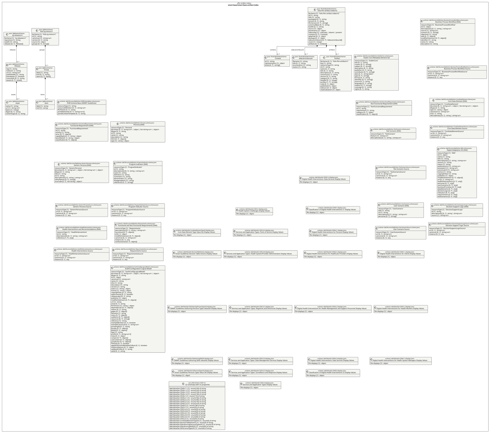
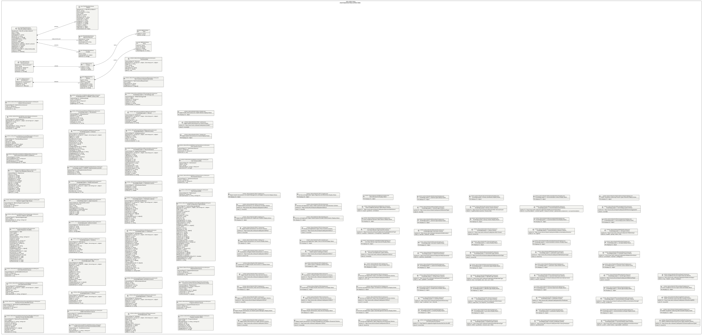

UML — smart-base/smart-base-artifact-index
Generated by cat-harness-tools/scripts/gen-uml-overview.ts — do not edit. The smart-base-artifact-index sub-graph of smart-base (smart-base/fhir-artifact-index), with every attribute read from its node schema.
Sources (same model): PlantUML · Mermaid · Graphviz DOT


The interactive view lays this diagram out in your browser with Graphviz, and needs JavaScript. Without it, pick Portrait or Landscape, or read the DOT source.
| sub-graph | directory | graph typologies | node schema | nodes | cohesion | in | out |
|---|---|---|---|---|---|---|---|
smart-base/smart-base-artifact-index | smart-base/fhir-artifact-index | fhir-artifact-index | FhirArtifactIndexSchema; IgMenuSchema; IgReleasesSchema; schema: sidecars/StructureDefinition-BusinessProcessWorkflow.schema.json; schema: sidecars/StructureDefinition-BusinessProcessWorkflowSource.schema.json; schema: sidecars/StructureDefinition-CoreDataElement.schema.json; schema: sidecars/StructureDefinition-CoreDataElementSource.schema.json; schema: sidecars/StructureDefinition-DAK.schema.json; schema: sidecars/StructureDefinition-DecisionSupportLogic.schema.json; schema: sidecars/StructureDefinition-DecisionSupportLogicSource.schema.json; schema: sidecars/StructureDefinition-DublinCore.schema.json; schema: sidecars/StructureDefinition-FHIRSchemaBase.schema.json; schema: sidecars/StructureDefinition-FunctionalRequirement.schema.json; schema: sidecars/StructureDefinition-GenericPersona.schema.json; schema: sidecars/StructureDefinition-GenericPersonaSource.schema.json; schema: sidecars/StructureDefinition-HealthInterventions.schema.json; schema: sidecars/StructureDefinition-HealthInterventionsSource.schema.json; schema: sidecars/StructureDefinition-KGCitation.schema.json; schema: sidecars/StructureDefinition-KGEdge.schema.json; schema: sidecars/StructureDefinition-KGEvidence.schema.json; schema: sidecars/StructureDefinition-KGEvidenceLocation.schema.json; schema: sidecars/StructureDefinition-KGGraphDocument.schema.json; schema: sidecars/StructureDefinition-KGHealthIntervention.schema.json; schema: sidecars/StructureDefinition-KGImplementationPractice.schema.json; schema: sidecars/StructureDefinition-KGIndicator.schema.json; schema: sidecars/StructureDefinition-KGKeyQuestion.schema.json; schema: sidecars/StructureDefinition-KGLibraryNode.schema.json; schema: sidecars/StructureDefinition-KGNode.schema.json; schema: sidecars/StructureDefinition-KGOutcome.schema.json; schema: sidecars/StructureDefinition-KGProvenanceSource.schema.json; schema: sidecars/StructureDefinition-KGPublication.schema.json; schema: sidecars/StructureDefinition-KGPublicationElement.schema.json; schema: sidecars/StructureDefinition-KGPublicationSection.schema.json; schema: sidecars/StructureDefinition-KGRecommendation.schema.json; schema: sidecars/StructureDefinition-KGReferenceEntry.schema.json; schema: sidecars/StructureDefinition-KGRemark.schema.json; schema: sidecars/StructureDefinition-KGTerminologyCode.schema.json; schema: sidecars/StructureDefinition-NonFunctionalRequirement.schema.json; schema: sidecars/StructureDefinition-Persona.schema.json; schema: sidecars/StructureDefinition-ProgramIndicator.schema.json; schema: sidecars/StructureDefinition-ProgramIndicatorSource.schema.json; schema: sidecars/StructureDefinition-Requirements.schema.json; schema: sidecars/StructureDefinition-RequirementsSource.schema.json; schema: sidecars/StructureDefinition-SushiConfigLogicalModel.schema.json; schema: sidecars/StructureDefinition-TestScenario.schema.json; schema: sidecars/StructureDefinition-TestScenarioSource.schema.json; schema: sidecars/StructureDefinition-UserScenario.schema.json; schema: sidecars/StructureDefinition-UserScenarioSource.schema.json; schema: sidecars/ValueSet-CDHIv1.1.displays.json; schema: sidecars/ValueSet-CDHIv1.1.schema.json; schema: sidecars/ValueSet-CDHIv1.2.displays.json; schema: sidecars/ValueSet-CDHIv1.2.schema.json; schema: sidecars/ValueSet-CDHIv1.3.displays.json; schema: sidecars/ValueSet-CDHIv1.3.schema.json; schema: sidecars/ValueSet-CDHIv1.4.displays.json; schema: sidecars/ValueSet-CDHIv1.4.schema.json; schema: sidecars/ValueSet-CDHIv1.displays.json; schema: sidecars/ValueSet-CDHIv1.schema.json; schema: sidecars/ValueSet-CDHIv2.1.displays.json; schema: sidecars/ValueSet-CDHIv2.1.schema.json; schema: sidecars/ValueSet-CDHIv2.2.displays.json; schema: sidecars/ValueSet-CDHIv2.2.schema.json; schema: sidecars/ValueSet-CDHIv2.3.displays.json; schema: sidecars/ValueSet-CDHIv2.3.schema.json; schema: sidecars/ValueSet-CDHIv2.4.displays.json; schema: sidecars/ValueSet-CDHIv2.4.schema.json; schema: sidecars/ValueSet-CDHIv2.displays.json; schema: sidecars/ValueSet-CDHIv2.schema.json; schema: sidecars/ValueSet-CDSCv1.displays.json; schema: sidecars/ValueSet-CDSCv1.schema.json; schema: sidecars/ValueSet-CDSCv2.A.displays.json; schema: sidecars/ValueSet-CDSCv2.A.schema.json; schema: sidecars/ValueSet-CDSCv2.B.displays.json; schema: sidecars/ValueSet-CDSCv2.B.schema.json; schema: sidecars/ValueSet-CDSCv2.C.displays.json; schema: sidecars/ValueSet-CDSCv2.C.schema.json; schema: sidecars/ValueSet-CDSCv2.D.displays.json; schema: sidecars/ValueSet-CDSCv2.D.schema.json; schema: sidecars/ValueSet-CDSCv2.E.displays.json; schema: sidecars/ValueSet-CDSCv2.E.schema.json; schema: sidecars/ValueSet-CDSCv2.displays.json; schema: sidecars/ValueSet-CDSCv2.schema.json; schema: sidecars/ValueSet-CoreDataElementTypeVS.displays.json; schema: sidecars/ValueSet-CoreDataElementTypeVS.schema.json; schema: sidecars/ValueSet-DecisionTableActions.displays.json; schema: sidecars/ValueSet-DecisionTableActions.schema.json; schema: sidecars/ValueSet-ISCO08ValueSet.displays.json; schema: sidecars/ValueSet-ISCO08ValueSet.schema.json; schema: sidecars/ValueSet-KGCertaintyVS.displays.json; schema: sidecars/ValueSet-KGCertaintyVS.schema.json; schema: sidecars/ValueSet-KGChangeStatusVS.displays.json; schema: sidecars/ValueSet-KGChangeStatusVS.schema.json; schema: sidecars/ValueSet-KGCitationKindVS.displays.json; schema: sidecars/ValueSet-KGCitationKindVS.schema.json; schema: sidecars/ValueSet-KGDerivationVS.displays.json; schema: sidecars/ValueSet-KGDerivationVS.schema.json; schema: sidecars/ValueSet-KGElementTypeVS.displays.json; schema: sidecars/ValueSet-KGElementTypeVS.schema.json; schema: sidecars/ValueSet-KGEvidenceTypeVS.displays.json; schema: sidecars/ValueSet-KGEvidenceTypeVS.schema.json; schema: sidecars/ValueSet-KGGrcStatusVS.displays.json; schema: sidecars/ValueSet-KGGrcStatusVS.schema.json; schema: sidecars/ValueSet-KGIdentifierTypeVS.displays.json; schema: sidecars/ValueSet-KGIdentifierTypeVS.schema.json; schema: sidecars/ValueSet-KGInterventionTypeVS.displays.json; schema: sidecars/ValueSet-KGInterventionTypeVS.schema.json; schema: sidecars/ValueSet-KGL1ClassesVS.displays.json; schema: sidecars/ValueSet-KGL1ClassesVS.schema.json; schema: sidecars/ValueSet-KGL1LibraryClassesVS.displays.json; schema: sidecars/ValueSet-KGL1LibraryClassesVS.schema.json; schema: sidecars/ValueSet-KGL1LibraryPredicatesVS.displays.json; schema: sidecars/ValueSet-KGL1LibraryPredicatesVS.schema.json; schema: sidecars/ValueSet-KGL1PredicatesVS.displays.json; schema: sidecars/ValueSet-KGL1PredicatesVS.schema.json; schema: sidecars/ValueSet-KGOutcomeImportanceVS.displays.json; schema: sidecars/ValueSet-KGOutcomeImportanceVS.schema.json; schema: sidecars/ValueSet-KGPublicationTypeVS.displays.json; schema: sidecars/ValueSet-KGPublicationTypeVS.schema.json; schema: sidecars/ValueSet-KGRecommendationDirectionVS.displays.json; schema: sidecars/ValueSet-KGRecommendationDirectionVS.schema.json; schema: sidecars/ValueSet-KGRecommendationKindVS.displays.json; schema: sidecars/ValueSet-KGRecommendationKindVS.schema.json; schema: sidecars/ValueSet-KGRecommendationStatusVS.displays.json; schema: sidecars/ValueSet-KGRecommendationStatusVS.schema.json; schema: sidecars/ValueSet-KGRecommendationStrengthVS.displays.json; schema: sidecars/ValueSet-KGRecommendationStrengthVS.schema.json; schema: sidecars/ValueSet-KGRemarkTypeVS.displays.json; schema: sidecars/ValueSet-KGRemarkTypeVS.schema.json; schema: sidecars/ValueSet-KGResolutionStatusVS.displays.json; schema: sidecars/ValueSet-KGResolutionStatusVS.schema.json; schema: sidecars/ValueSet-KGRowTypeVS.displays.json; schema: sidecars/ValueSet-KGRowTypeVS.schema.json; schema: sidecars/ValueSet-KGTerminologySystemVS.displays.json; schema: sidecars/ValueSet-KGTerminologySystemVS.schema.json; schema: sidecars/ValueSet-SGAuthoringPersonaTypesVS.displays.json; schema: sidecars/ValueSet-SGAuthoringPersonaTypesVS.schema.json; schema: sidecars/ValueSet-SGAuthoringSkillsVS.displays.json; schema: sidecars/ValueSet-SGAuthoringSkillsVS.schema.json; schema: sidecars/ValueSet-SGPersonaTypesVS.displays.json; schema: sidecars/ValueSet-SGPersonaTypesVS.schema.json | not measured |
Nodes, cohesion, in and out are the detangler’s pinned measurements for the same directory (bun run cat kg:detangle; skill graph-detanglement). Not measured means the detangler does not scan that directory, not that it has no edges.
Sub-graphs
The same model, drawn by Mermaid
Kept so the page renders even where the PlantUML image is missing, and because Mermaid nodes carry the CSS class that colours them from uml.css.
classDiagram
direction TB
namespace smart_base__smart_base_artifact_index {
class smart_base_smart_base_artifact_index_folio_fhir_artifact_index_v2_Context["Context"] {
<<json: FhirArtifactIndexSchema>>
id [1] string
representation [1] object
binds [0..*] string[]
}
class smart_base_smart_base_artifact_index_folio_fhir_artifact_index_v2_SidecarsUnbound["SidecarsUnbound"] {
<<json: FhirArtifactIndexSchema>>
filename [1] string
title [0..1] string
enumeration [1] string
reason [1] string
}
class smart_base_smart_base_artifact_index_folio_fhir_artifact_index_v2_Artifact["Artifact"] {
<<json: FhirArtifactIndexSchema>>
$schema [0..1] 'folio-fhir-artifact/v1'
key [1] string
resourceType [1] string
id [1] string
name [0..1] string
title [0..1] string
description [0..1] string
canonical [0..1] string
version [0..1] string
category [0..1] string
listedAt [0..1] integer
profiles [1..*] string[]
code [0..1] object
published [1] object
sidecars [0..1] object
materialization [1] object
}
class smart_base_smart_base_artifact_index_folio_fhir_artifact_index_v2_folio_fhir_artifact_index_v2["folio-fhir-artifact-index/v2"] {
<<json: FhirArtifactIndexSchema>>
$schema [1] 'folio-fhir-artifact-index/v2'
id [1] string
title [1] string
packageId [0..1] string
version [0..1] string
fhirVersion [0..*] string[]
canonicalBase [0..1] string
builtAt [0..1] string
source [1] object
provenance [1] object
sidecarApi [1] unknown | absent | present
contexts [0..*] Context[]
igApiHub [0..1] object
package [0..1] object
sidecarsUnbound [0..*] SidecarsUnbound[]
count [1] integer
artifacts [0..*] Artifact[]
}
class smart_base_smart_base_artifact_index_folio_ig_menu_v1_Item["Item"] {
<<json: IgMenuSchema>>
label [1] string
href [1] string
}
class smart_base_smart_base_artifact_index_folio_ig_menu_v1_Group["Group"] {
<<json: IgMenuSchema>>
label [1] string
href [0..1] string
items [0..*] Item[]
}
class smart_base_smart_base_artifact_index_folio_ig_menu_v1_folio_ig_menu_v1["folio-ig-menu/v1"] {
<<json: IgMenuSchema>>
$schema [1] 'folio-ig-menu/v1'
id [1] string
canonical [1] string~uri~
version [0..1] string
source [1] object
groups [0..*] Group[]
}
class smart_base_smart_base_artifact_index_ig_releases_v1_Asset["Asset"] {
<<json: IgReleasesSchema>>
name [1] string
url [1] string~uri~
bytes [1] integer
digest [0..1] string
contentType [0..1] string
}
class smart_base_smart_base_artifact_index_ig_releases_v1_Release["Release"] {
<<json: IgReleasesSchema>>
tag [1] string
name [0..1] string
url [1] string~uri~
publishedAt [1] string
prerelease [1] boolean
commitish [0..1] string
assets [0..*] Asset[]
}
class smart_base_smart_base_artifact_index_ig_releases_v1_ig_releases_v1["ig-releases/v1"] {
<<json: IgReleasesSchema>>
$schema [1] 'ig-releases/v1'
repository [1] string
readAt [1] string
releases [0..*] Release[]
}
class smart_base_smart_base_artifact_index_sidecars_StructureDefinition_BusinessProcessWorkflow_schema_json_Business_Process_Workflow__DAK_["Business Process Workflow (DAK)"] {
<<schema: sidecars/StructureDefinition-BusinessProcessWorkflow.schema.json>>
resourceType [1] 'BusinessProcessWorkflow'
id [1] object
description[x] [0..1] string | string~uri~
source [1] string~uri~
scenario [0..*] string[]
objectives [1] string
task [0..*] object[]
modifierExtension [0..*] object[]
identifier [1] string
name [1] string
description [1] string
}
class smart_base_smart_base_artifact_index_sidecars_StructureDefinition_BusinessProcessWorkflowSource_schema_json_Business_Process_Workflow_Source["Business Process Workflow Source"] {
<<schema: sidecars/StructureDefinition-BusinessProcessWorkflowSource.schema.json>>
resourceType [1] 'BusinessProcessWorkflowSource'
url [0..1] string~uri~
canonical [0..1] string~uri~
instance [0..1] any
}
class smart_base_smart_base_artifact_index_sidecars_StructureDefinition_CoreDataElement_schema_json_Core_Data_Element__DAK_["Core Data Element (DAK)"] {
<<schema: sidecars/StructureDefinition-CoreDataElement.schema.json>>
resourceType [1] 'CoreDataElement'
@context [0..1] string~uri~ | object | list~string~uri~ | object~
@type [0..1] string
type [1] any
canonical [1] string~uri~
id [0..1] string
description[x] [0..1] string | string~uri~
}
class smart_base_smart_base_artifact_index_sidecars_StructureDefinition_CoreDataElementSource_schema_json_Core_Data_Element_Source["Core Data Element Source"] {
<<schema: sidecars/StructureDefinition-CoreDataElementSource.schema.json>>
resourceType [1] 'CoreDataElementSource'
url [0..1] string~uri~
canonical [0..1] string~uri~
instance [0..1] any
}
class smart_base_smart_base_artifact_index_sidecars_StructureDefinition_DAK_schema_json_Digital_Adaptation_Kit__DAK_["Digital Adaptation Kit (DAK)"] {
<<schema: sidecars/StructureDefinition-DAK.schema.json>>
resourceType [1] 'DAK'
id [1] object
name [1] string
title [1] string
description[x] [1] string | string~uri~
version [1] string
status [1] string
publicationUrl [1] string~uri~
previewUrl [1] string~uri~
canonicalUrl [1] string~uri~
license [1] string
copyrightYear [1] string
publisher [1] object
modifierExtension [0..*] object[]
url [0..1] string~uri~
healthInterventions [0..*] any[]
personas [0..*] any[]
userScenarios [0..*] any[]
businessProcesses [0..*] any[]
dataElements [0..*] any[]
decisionLogic [0..*] any[]
indicators [0..*] any[]
requirements [0..*] any[]
testScenarios [0..*] any[]
}
class smart_base_smart_base_artifact_index_sidecars_StructureDefinition_DecisionSupportLogic_schema_json_Decision_Support_Logic__DAK_["Decision-Support Logic (DAK)"] {
<<schema: sidecars/StructureDefinition-DecisionSupportLogic.schema.json>>
resourceType [1] 'DecisionSupportLogic'
id [1] string
description[x] [0..1] string | string~uri~
source [1] string~uri~
}
class smart_base_smart_base_artifact_index_sidecars_StructureDefinition_DecisionSupportLogicSource_schema_json_Decision_Support_Logic_Source["Decision Support Logic Source"] {
<<schema: sidecars/StructureDefinition-DecisionSupportLogicSource.schema.json>>
resourceType [1] 'DecisionSupportLogicSource'
url [0..1] string~uri~
canonical [0..1] string~uri~
instance [0..1] any
}
class smart_base_smart_base_artifact_index_sidecars_StructureDefinition_DublinCore_schema_json_Dublin_Core_Metadata_Element_Set["Dublin Core Metadata Element Set"] {
<<schema: sidecars/StructureDefinition-DublinCore.schema.json>>
resourceType [1] 'DublinCore'
title [0..1] string
creator [0..*] string[]
subject [0..*] string[]
description [0..1] string
publisher [0..1] string
contributor [0..*] string[]
date [0..1] string~date~
type [0..*] string[]
format [0..1] string
identifier [0..*] string[]
source [0..1] string
language [0..1] string
relation [0..*] string[]
coverage [0..1] string
rights [0..1] string
}
class smart_base_smart_base_artifact_index_sidecars_StructureDefinition_FHIRSchemaBase_schema_json_FHIR_Schema_Base__SMART_Guidelines_["FHIR Schema Base (SMART Guidelines)"] {
<<schema: sidecars/StructureDefinition-FHIRSchemaBase.schema.json>>
resourceType [1] string
resourceDefinition [0..1] string~uri~
fhir:parent [0..1] string
jsonld:valuesets [0..*] string[]
jsonld:contextTemplate [0..1] object
}
class smart_base_smart_base_artifact_index_sidecars_StructureDefinition_FunctionalRequirement_schema_json_Functional_Requirement__DAK_["Functional Requirement (DAK)"] {
<<schema: sidecars/StructureDefinition-FunctionalRequirement.schema.json>>
resourceType [1] 'FunctionalRequirement'
id [1] string
activity [1] string
actor [0..*] object[]
capability[x] [0..1] string | object
benefit[x] [0..1] string | object
classification [0..*] object[]
}
class smart_base_smart_base_artifact_index_sidecars_StructureDefinition_GenericPersona_schema_json_Generic_Persona__DAK_["Generic Persona (DAK)"] {
<<schema: sidecars/StructureDefinition-GenericPersona.schema.json>>
resourceType [1] 'GenericPersona'
@context [0..1] string~uri~ | object | list~string~uri~ | object~
@type [0..1] string
title [1] string
id [1] string
description[x] [1] string | string~uri~
otherNames [0..*] string[]
iscoCode [0..*] any[]
}
class smart_base_smart_base_artifact_index_sidecars_StructureDefinition_GenericPersonaSource_schema_json_Generic_Persona_Source["Generic Persona Source"] {
<<schema: sidecars/StructureDefinition-GenericPersonaSource.schema.json>>
resourceType [1] 'GenericPersonaSource'
url [0..1] string~uri~
canonical [0..1] string~uri~
instance [0..1] any
}
class smart_base_smart_base_artifact_index_sidecars_StructureDefinition_HealthInterventions_schema_json_Health_Interventions_and_Recommendations__DAK_["Health Interventions and Recommendations (DAK)"] {
<<schema: sidecars/StructureDefinition-HealthInterventions.schema.json>>
resourceType [1] 'HealthInterventions'
id [1] string
description[x] [0..1] string | string~uri~
reference [1..*] any[]
}
class smart_base_smart_base_artifact_index_sidecars_StructureDefinition_HealthInterventionsSource_schema_json_Health_Interventions_Source["Health Interventions Source"] {
<<schema: sidecars/StructureDefinition-HealthInterventionsSource.schema.json>>
resourceType [1] 'HealthInterventionsSource'
url [0..1] string~uri~
canonical [0..1] string~uri~
instance [0..1] any
}
class smart_base_smart_base_artifact_index_sidecars_StructureDefinition_KGCitation_schema_json_Knowledge_graph_L1__Citation["Knowledge graph L1: Citation"] {
<<schema: sidecars/StructureDefinition-KGCitation.schema.json>>
resourceType [1] 'KGCitation'
@context [0..1] string~uri~ | object | list~string~uri~ | object~
@type [0..1] string
text [0..1] string
numbering [0..1] string
citationKind [0..1] any
resolutionStatus [0..1] any
}
class smart_base_smart_base_artifact_index_sidecars_StructureDefinition_KGEdge_schema_json_Knowledge_graph__edge["Knowledge graph: edge"] {
<<schema: sidecars/StructureDefinition-KGEdge.schema.json>>
resourceType [1] 'KGEdge'
@context [0..1] string~uri~ | object | list~string~uri~ | object~
@type [0..1] string
type [1] string
predicate [1] any
source [1] string
target [1] string
qualifier [0..1] string
derivation [1] any
note [0..1] string
evidence [0..1] any
flagRef [0..1] string
skill [0..1] string
properties [0..1] object
id [0..1] object
modifierExtension [0..*] object[]
resolutionStatus [0..1] any
matchedOn [0..1] string
}
class smart_base_smart_base_artifact_index_sidecars_StructureDefinition_KGEvidence_schema_json_Knowledge_graph_L1__Evidence["Knowledge graph L1: Evidence"] {
<<schema: sidecars/StructureDefinition-KGEvidence.schema.json>>
resourceType [1] 'KGEvidence'
@context [0..1] string~uri~ | object | list~string~uri~ | object~
@type [0..1] string
evidenceType [0..1] any
certainty [0..1] any
summary [0..1] string
studyCount [0..1] integer
citation [0..1] string
contentHash [0..1] string
}
class smart_base_smart_base_artifact_index_sidecars_StructureDefinition_KGEvidenceLocation_schema_json_Knowledge_graph__evidence_location["Knowledge graph: evidence location"] {
<<schema: sidecars/StructureDefinition-KGEvidenceLocation.schema.json>>
resourceType [1] 'KGEvidenceLocation'
location [1] string
quote [0..1] string
artifact [0..1] string
by [0..1] string
at [0..1] string~date~
}
class smart_base_smart_base_artifact_index_sidecars_StructureDefinition_KGGraphDocument_schema_json_Knowledge_graph_L1__graph_document["Knowledge graph L1: graph document"] {
<<schema: sidecars/StructureDefinition-KGGraphDocument.schema.json>>
resourceType [1] 'KGGraphDocument'
context [1] string~uri~
id [1] string
type [1] string
ontologyVersion [1] string
generatedAt [1] string~date-time~
wasDerivedFrom [0..*] any[]
nodes [0..*] any[]
edges [0..*] any[]
dak [0..1] object
}
class smart_base_smart_base_artifact_index_sidecars_StructureDefinition_KGHealthIntervention_schema_json_Knowledge_graph_L1__Health_intervention["Knowledge graph L1: Health intervention"] {
<<schema: sidecars/StructureDefinition-KGHealthIntervention.schema.json>>
resourceType [1] 'KGHealthIntervention'
@context [0..1] string~uri~ | object | list~string~uri~ | object~
@type [0..1] string
identifier [0..1] string
name [0..1] string
description [0..1] string
interventionType [0..1] any
}
class smart_base_smart_base_artifact_index_sidecars_StructureDefinition_KGImplementationPractice_schema_json_Knowledge_graph_L1_LIBRARY__Implementation_practice["Knowledge graph L1-LIBRARY: Implementation practice"] {
<<schema: sidecars/StructureDefinition-KGImplementationPractice.schema.json>>
resourceType [1] 'KGImplementationPractice'
identifier [0..1] string
statement [0..1] string
contentHash [0..1] string
}
class smart_base_smart_base_artifact_index_sidecars_StructureDefinition_KGIndicator_schema_json_Knowledge_graph_L1__Indicator["Knowledge graph L1: Indicator"] {
<<schema: sidecars/StructureDefinition-KGIndicator.schema.json>>
resourceType [1] 'KGIndicator'
@context [0..1] string~uri~ | object | list~string~uri~ | object~
@type [0..1] string
refNo [0..1] string
shortName [0..1] string
definition [0..1] string
numerator [0..1] string
denominator [0..1] string
variants [0..*] object[]
id [0..1] object
modifierExtension [0..*] object[]
population [0..1] string
whatItMeasures [0..1] string
rationale [0..1] string
methodOfMeasurement [0..1] string
disaggregation [0..1] string
programmeArea [0..1] string
isCore [0..1] boolean
isSurveyBased [0..1] boolean
changeStatus [0..1] any
contentHash [0..1] string
}
class smart_base_smart_base_artifact_index_sidecars_StructureDefinition_KGKeyQuestion_schema_json_Knowledge_graph_L1__Key_question["Knowledge graph L1: Key question"] {
<<schema: sidecars/StructureDefinition-KGKeyQuestion.schema.json>>
resourceType [1] 'KGKeyQuestion'
identifier [0..1] string
text [0..1] string
population [0..1] string
intervention [0..1] string
comparator [0..1] string
setting [0..1] string
contentHash [0..1] string
}
class smart_base_smart_base_artifact_index_sidecars_StructureDefinition_KGLibraryNode_schema_json_Knowledge_graph_L1_LIBRARY__Library_node["Knowledge graph L1-LIBRARY: Library node"] {
<<schema: sidecars/StructureDefinition-KGLibraryNode.schema.json>>
resourceType [1] 'KGLibraryNode'
iri [0..1] string~uri~
libraryClass [0..1] string~uri~
entry [0..1] string
pageRange [0..1] string
}
class smart_base_smart_base_artifact_index_sidecars_StructureDefinition_KGNode_schema_json_Knowledge_graph__node["Knowledge graph: node"] {
<<schema: sidecars/StructureDefinition-KGNode.schema.json>>
resourceType [1] 'KGNode'
@context [0..1] string~uri~ | object | list~string~uri~ | object~
@type [0..1] string
id [1] string
type [1] any
label [1] string
definedBy [0..1] string~uri~
properties [0..1] object
derivation [1] any
note [0..1] string
evidence [0..1] any
flagRef [0..1] string
skill [0..1] string
}
class smart_base_smart_base_artifact_index_sidecars_StructureDefinition_KGOutcome_schema_json_Knowledge_graph_L1__Outcome["Knowledge graph L1: Outcome"] {
<<schema: sidecars/StructureDefinition-KGOutcome.schema.json>>
resourceType [1] 'KGOutcome'
@context [0..1] string~uri~ | object | list~string~uri~ | object~
@type [0..1] string
name [0..1] string
importance [0..1] any
aliases [0..*] string[]
category [0..1] string
}
class smart_base_smart_base_artifact_index_sidecars_StructureDefinition_KGProvenanceSource_schema_json_Knowledge_graph__provenance_source["Knowledge graph: provenance source"] {
<<schema: sidecars/StructureDefinition-KGProvenanceSource.schema.json>>
resourceType [1] 'KGProvenanceSource'
path [1] string
sha256 [1] string
repository [0..1] string
commit [0..1] string
note [0..1] string
}
class smart_base_smart_base_artifact_index_sidecars_StructureDefinition_KGPublication_schema_json_Knowledge_graph_L1__Publication["Knowledge graph L1: Publication"] {
<<schema: sidecars/StructureDefinition-KGPublication.schema.json>>
resourceType [1] 'KGPublication'
@context [0..1] string~uri~ | object | list~string~uri~ | object~
@type [0..1] string
title [0..1] string
creator [0..*] string[]
subject [0..*] string[]
description [0..1] string
publisher [0..1] string
contributor [0..*] string[]
date [0..1] string~date~
type [0..1] any
format [0..1] string
identifier [0..*] string[]
source [0..1] string
language [0..1] string
relation [0..*] string[]
coverage [0..1] string
rights [0..1] string
issued [0..1] string~date~
modified [0..1] string~date~
version [0..1] string
identifiers [0..*] object[]
id [0..1] object
modifierExtension [0..*] object[]
value [0..1] string
url [0..1] string~uri~
sha256 [0..1] string
publicationType [0..1] any
grcStatus [0..1] any
reviewBy [0..1] string~date~
}
class smart_base_smart_base_artifact_index_sidecars_StructureDefinition_KGPublicationElement_schema_json_Knowledge_graph_L1__Publication_element["Knowledge graph L1: Publication element"] {
<<schema: sidecars/StructureDefinition-KGPublicationElement.schema.json>>
resourceType [1] 'KGPublicationElement'
@context [0..1] string~uri~ | object | list~string~uri~ | object~
@type [0..1] string
elementType [0..1] any
label [0..1] string
caption [0..1] string
pageRange [0..1] string
ordinal [0..1] integer
rowType [0..1] any
columns [0..*] string[]
columnMap [0..*] object[]
id [0..1] object
modifierExtension [0..*] object[]
column [0..1] string
field [0..1] string
cells [0..*] string[]
text [0..1] string
sha256 [0..1] string
}
class smart_base_smart_base_artifact_index_sidecars_StructureDefinition_KGPublicationSection_schema_json_Knowledge_graph_L1__Publication_section["Knowledge graph L1: Publication section"] {
<<schema: sidecars/StructureDefinition-KGPublicationSection.schema.json>>
resourceType [1] 'KGPublicationSection'
heading [0..1] string
number [0..1] string
pageRange [0..1] string
ordinal [0..1] integer
}
class smart_base_smart_base_artifact_index_sidecars_StructureDefinition_KGRecommendation_schema_json_Knowledge_graph_L1__Recommendation["Knowledge graph L1: Recommendation"] {
<<schema: sidecars/StructureDefinition-KGRecommendation.schema.json>>
resourceType [1] 'KGRecommendation'
@context [0..1] string~uri~ | object | list~string~uri~ | object~
@type [0..1] string
identifier [0..1] string
statement [0..1] string
kind [0..1] any
direction [0..1] any
strength [0..1] any
overallCertainty [0..1] any
justification [0..1] string
status [0..1] any
changeStatus [0..1] any
intervention [0..1] string
interventionType [0..1] any
population [0..1] string
setting [0..1] string
provider [0..1] string
timing [0..1] string
contentHash [0..1] string
}
class smart_base_smart_base_artifact_index_sidecars_StructureDefinition_KGReferenceEntry_schema_json_Knowledge_graph_L1__Reference_entry["Knowledge graph L1: Reference entry"] {
<<schema: sidecars/StructureDefinition-KGReferenceEntry.schema.json>>
resourceType [1] 'KGReferenceEntry'
@context [0..1] string~uri~ | object | list~string~uri~ | object~
@type [0..1] string
number [0..1] string
text [0..1] string
url [0..1] string~uri~
resolutionStatus [0..1] any
}
class smart_base_smart_base_artifact_index_sidecars_StructureDefinition_KGRemark_schema_json_Knowledge_graph_L1__Remark["Knowledge graph L1: Remark"] {
<<schema: sidecars/StructureDefinition-KGRemark.schema.json>>
resourceType [1] 'KGRemark'
@context [0..1] string~uri~ | object | list~string~uri~ | object~
@type [0..1] string
text [0..1] string
remarkType [0..1] any
ordinal [0..1] integer
contentHash [0..1] string
}
class smart_base_smart_base_artifact_index_sidecars_StructureDefinition_KGTerminologyCode_schema_json_Knowledge_graph_L1__Terminology_code["Knowledge graph L1: Terminology code"] {
<<schema: sidecars/StructureDefinition-KGTerminologyCode.schema.json>>
resourceType [1] 'KGTerminologyCode'
id [0..1] object
system [0..1] string~uri~
version [0..1] string
code [0..1] string
display [0..1] string
userSelected [0..1] boolean
}
class smart_base_smart_base_artifact_index_sidecars_StructureDefinition_NonFunctionalRequirement_schema_json_Non_Functional_Requirement__DAK_["Non-Functional Requirement (DAK)"] {
<<schema: sidecars/StructureDefinition-NonFunctionalRequirement.schema.json>>
resourceType [1] 'NonFunctionalRequirement'
id [1] string
requirement [1] string
category [0..1] object
classification [0..*] object[]
}
class smart_base_smart_base_artifact_index_sidecars_StructureDefinition_Persona_schema_json_Persona__DAK_["Persona (DAK)"] {
<<schema: sidecars/StructureDefinition-Persona.schema.json>>
resourceType [1] 'Persona'
@context [0..1] string~uri~ | object | list~string~uri~ | object~
@type [0..1] string
id [1] string
name [1] string
description [1] string
ISCO [0..*] object[]
type [1] any
}
class smart_base_smart_base_artifact_index_sidecars_StructureDefinition_ProgramIndicator_schema_json_Program_Indicator__DAK_["Program Indicator (DAK)"] {
<<schema: sidecars/StructureDefinition-ProgramIndicator.schema.json>>
resourceType [1] 'ProgramIndicator'
id [1] string
description[x] [0..1] string | string~uri~
name [1] string
definition [1] string
numerator [1] string
denominator [1] string
disaggregation [1] string
references [0..*] string[]
}
class smart_base_smart_base_artifact_index_sidecars_StructureDefinition_ProgramIndicatorSource_schema_json_Program_Indicator_Source["Program Indicator Source"] {
<<schema: sidecars/StructureDefinition-ProgramIndicatorSource.schema.json>>
resourceType [1] 'ProgramIndicatorSource'
url [0..1] string~uri~
canonical [0..1] string~uri~
instance [0..1] any
}
class smart_base_smart_base_artifact_index_sidecars_StructureDefinition_Requirements_schema_json_Functional_and_Non_Functional_Requirements__DAK_["Functional and Non-Functional Requirements (DAK)"] {
<<schema: sidecars/StructureDefinition-Requirements.schema.json>>
resourceType [1] 'Requirements'
description[x] [0..1] string | string~uri~
functional [0..*] object[]
id [0..1] object
modifierExtension [0..*] object[]
canonical [0..1] string~uri~
instance [0..1] any
nonfunctional [0..*] object[]
}
class smart_base_smart_base_artifact_index_sidecars_StructureDefinition_RequirementsSource_schema_json_Requirements_Source["Requirements Source"] {
<<schema: sidecars/StructureDefinition-RequirementsSource.schema.json>>
resourceType [1] 'RequirementsSource'
url [0..1] string~uri~
canonical [0..1] string~uri~
instance [0..1] any
}
class smart_base_smart_base_artifact_index_sidecars_StructureDefinition_SushiConfigLogicalModel_schema_json_SUSHI_Configuration_Logical_Model["SUSHI Configuration Logical Model"] {
<<schema: sidecars/StructureDefinition-SushiConfigLogicalModel.schema.json>>
resourceType [1] 'SushiConfigLogicalModel'
@context [0..1] string~uri~ | object | list~string~uri~ | object~
@type [0..1] string
id [1] object
canonical [1] string~uri~
name [1] string
title [1] string
description [1] string
version [1] string
status [1] any
license [1] any
copyrightYear [0..1] string
experimental [0..1] boolean
releaseLabel [0..1] string
publisher [1] object
modifierExtension [0..*] object[]
url [1] string
email [0..1] string
fhirVersion [1] any
dependencies [0..*] object[]
reason [0..1] string
pages [0..*] object[]
filename [1] string
menu [0..*] object[]
subItems [0..*] object[]
resources [0..*] string[]
reference [1] string
exampleBoolean [0..1] boolean
exampleCanonical [0..1] string~uri~
groupingId [0..1] string
groups [0..*] object[]
global [0..*] object[]
type [1] string
profile [0..*] string~uri~[]
meta [0..1] object
contact [0..*] object[]
useContext [0..*] object[]
jurisdiction [0..*] object[]
FSHOnly [0..1] boolean
applyExtensionMetadataToRoot [0..1] boolean
instanceOptions [0..1] object
setMetaProfile [0..1] string
setId [0..1] string
}
class smart_base_smart_base_artifact_index_sidecars_StructureDefinition_TestScenario_schema_json_Test_Scenario__DAK_["Test Scenario (DAK)"] {
<<schema: sidecars/StructureDefinition-TestScenario.schema.json>>
resourceType [1] 'TestScenario'
feature [1] string~uri~
description[x] [0..1] string | string~uri~
}
class smart_base_smart_base_artifact_index_sidecars_StructureDefinition_TestScenarioSource_schema_json_Test_Scenario_Source["Test Scenario Source"] {
<<schema: sidecars/StructureDefinition-TestScenarioSource.schema.json>>
resourceType [1] 'TestScenarioSource'
url [0..1] string~uri~
canonical [0..1] string~uri~
instance [0..1] any
}
class smart_base_smart_base_artifact_index_sidecars_StructureDefinition_UserScenario_schema_json_User_Scenario__DAK_["User Scenario (DAK)"] {
<<schema: sidecars/StructureDefinition-UserScenario.schema.json>>
resourceType [1] 'UserScenario'
title [1] string
id [1] string
description[x] [1] string | string~uri~
personas [0..*] string[]
}
class smart_base_smart_base_artifact_index_sidecars_StructureDefinition_UserScenarioSource_schema_json_User_Scenario_Source["User Scenario Source"] {
<<schema: sidecars/StructureDefinition-UserScenarioSource.schema.json>>
resourceType [1] 'UserScenarioSource'
url [0..1] string~uri~
canonical [0..1] string~uri~
instance [0..1] any
}
class smart_base_smart_base_artifact_index_sidecars_ValueSet_CDHIv1_1_displays_json_Digital_Health_Interventions_for_Clients_Display_Values["Digital Health Interventions for Clients Display Values"] {
<<schema: sidecars/ValueSet-CDHIv1.1.displays.json>>
fhir:displays [1] object
}
class smart_base_smart_base_artifact_index_sidecars_ValueSet_CDHIv1_1_schema_json_Digital_Health_Interventions_for_Clients_Schema["Digital Health Interventions for Clients Schema"] {
<<schema: sidecars/ValueSet-CDHIv1.1.schema.json>>
system [1] 'http://smart.who.int/base/CodeSystem/CDHIv1'
code [1] enum(24)
}
class smart_base_smart_base_artifact_index_sidecars_ValueSet_CDHIv1_2_displays_json_Digital_Health_Interventions_for_Health_Workers_Display_Values["Digital Health Interventions for Health Workers Display Values"] {
<<schema: sidecars/ValueSet-CDHIv1.2.displays.json>>
fhir:displays [1] object
}
class smart_base_smart_base_artifact_index_sidecars_ValueSet_CDHIv1_2_schema_json_Digital_Health_Interventions_for_Health_Workers_Schema["Digital Health Interventions for Health Workers Schema"] {
<<schema: sidecars/ValueSet-CDHIv1.2.schema.json>>
system [1] 'http://smart.who.int/base/CodeSystem/CDHIv1'
code [1] enum(43)
}
class smart_base_smart_base_artifact_index_sidecars_ValueSet_CDHIv1_3_displays_json_Digital_Health_Interventions_for_Health_System_Managers_Display_Values["Digital Health Interventions for Health System Managers Display Values"] {
<<schema: sidecars/ValueSet-CDHIv1.3.displays.json>>
fhir:displays [1] object
}
class smart_base_smart_base_artifact_index_sidecars_ValueSet_CDHIv1_3_schema_json_Digital_Health_Interventions_for_Health_System_Managers_Schema["Digital Health Interventions for Health System Managers Schema"] {
<<schema: sidecars/ValueSet-CDHIv1.3.schema.json>>
system [1] 'http://smart.who.int/base/CodeSystem/CDHIv1'
code [1] enum(35)
}
class smart_base_smart_base_artifact_index_sidecars_ValueSet_CDHIv1_4_displays_json_Digital_Health_Interventions__Data_Services_Display_Values["Digital Health Interventions: Data Services Display Values"] {
<<schema: sidecars/ValueSet-CDHIv1.4.displays.json>>
fhir:displays [1] object
}
class smart_base_smart_base_artifact_index_sidecars_ValueSet_CDHIv1_4_schema_json_Digital_Health_Interventions__Data_Services_Schema["Digital Health Interventions: Data Services Schema"] {
<<schema: sidecars/ValueSet-CDHIv1.4.schema.json>>
system [1] 'http://smart.who.int/base/CodeSystem/CDHIv1'
code [1] enum(17)
}
class smart_base_smart_base_artifact_index_sidecars_ValueSet_CDHIv1_displays_json_Classification_of_Digital_Health_Interventions_v1_Display_Values["Classification of Digital Health Interventions v1 Display Values"] {
<<schema: sidecars/ValueSet-CDHIv1.displays.json>>
fhir:displays [1] object
}
class smart_base_smart_base_artifact_index_sidecars_ValueSet_CDHIv1_schema_json_Classification_of_Digital_Health_Interventions_v1_Schema["Classification of Digital Health Interventions v1 Schema"] {
<<schema: sidecars/ValueSet-CDHIv1.schema.json>>
system [1] 'http://smart.who.int/base/CodeSystem/CDHIv1'
code [1] enum(119)
}
class smart_base_smart_base_artifact_index_sidecars_ValueSet_CDHIv2_1_displays_json_Digital_Health_Interventions_for_Persons_Display_Values["Digital Health Interventions for Persons Display Values"] {
<<schema: sidecars/ValueSet-CDHIv2.1.displays.json>>
fhir:displays [1] object
}
class smart_base_smart_base_artifact_index_sidecars_ValueSet_CDHIv2_1_schema_json_Digital_Health_Interventions_for_Persons_Schema["Digital Health Interventions for Persons Schema"] {
<<schema: sidecars/ValueSet-CDHIv2.1.schema.json>>
system [1] 'http://smart.who.int/base/CodeSystem/CDHIv2'
code [1] enum(28)
}
class smart_base_smart_base_artifact_index_sidecars_ValueSet_CDHIv2_2_displays_json_Digital_Health_Interventions_for_Healthcare_Providers_Display_Values["Digital Health Interventions for Healthcare Providers Display Values"] {
<<schema: sidecars/ValueSet-CDHIv2.2.displays.json>>
fhir:displays [1] object
}
class smart_base_smart_base_artifact_index_sidecars_ValueSet_CDHIv2_2_schema_json_Digital_Health_Interventions_for_Healthcare_Providers_Schema["Digital Health Interventions for Healthcare Providers Schema"] {
<<schema: sidecars/ValueSet-CDHIv2.2.schema.json>>
system [1] 'http://smart.who.int/base/CodeSystem/CDHIv2'
code [1] enum(47)
}
class smart_base_smart_base_artifact_index_sidecars_ValueSet_CDHIv2_3_displays_json_Digital_Health_Interventions_for_Health_Management_and_Support_Personnel_Display_Values["Digital Health Interventions for Health Management and Support Personnel Display Values"] {
<<schema: sidecars/ValueSet-CDHIv2.3.displays.json>>
fhir:displays [1] object
}
class smart_base_smart_base_artifact_index_sidecars_ValueSet_CDHIv2_3_schema_json_Digital_Health_Interventions_for_Health_Management_and_Support_Personnel_Schema["Digital Health Interventions for Health Management and Support Personnel Schema"] {
<<schema: sidecars/ValueSet-CDHIv2.3.schema.json>>
system [1] 'http://smart.who.int/base/CodeSystem/CDHIv2'
code [1] enum(38)
}
class smart_base_smart_base_artifact_index_sidecars_ValueSet_CDHIv2_4_displays_json_Digital_Health_Interventions__Data_Services_Display_Values["Digital Health Interventions: Data Services Display Values"] {
<<schema: sidecars/ValueSet-CDHIv2.4.displays.json>>
fhir:displays [1] object
}
class smart_base_smart_base_artifact_index_sidecars_ValueSet_CDHIv2_4_schema_json_Digital_Health_Interventions__Data_Services_Schema["Digital Health Interventions: Data Services Schema"] {
<<schema: sidecars/ValueSet-CDHIv2.4.schema.json>>
system [1] 'http://smart.who.int/base/CodeSystem/CDHIv2'
code [1] enum(25)
}
class smart_base_smart_base_artifact_index_sidecars_ValueSet_CDHIv2_displays_json_Classification_of_Digital_Health_Interventions_v2_Display_Values["Classification of Digital Health Interventions v2 Display Values"] {
<<schema: sidecars/ValueSet-CDHIv2.displays.json>>
fhir:displays [1] object
}
class smart_base_smart_base_artifact_index_sidecars_ValueSet_CDHIv2_schema_json_Classification_of_Digital_Health_Interventions_v2_Schema["Classification of Digital Health Interventions v2 Schema"] {
<<schema: sidecars/ValueSet-CDHIv2.schema.json>>
system [1] 'http://smart.who.int/base/CodeSystem/CDHIv2'
code [1] enum(138)
}
class smart_base_smart_base_artifact_index_sidecars_ValueSet_CDSCv1_displays_json_Health_System_Challenges_Display_Values["Health System Challenges Display Values"] {
<<schema: sidecars/ValueSet-CDSCv1.displays.json>>
fhir:displays [1] object
}
class smart_base_smart_base_artifact_index_sidecars_ValueSet_CDSCv1_schema_json_Health_System_Challenges_Schema["Health System Challenges Schema"] {
<<schema: sidecars/ValueSet-CDSCv1.schema.json>>
system [1] 'http://smart.who.int/base/CodeSystem/CDSCv1'
code [1] enum(25)
}
class smart_base_smart_base_artifact_index_sidecars_ValueSet_CDSCv2_A_displays_json_Services_and_Application_Types__Point_of_Service_Display_Values["Services and Application Types: Point of Service Display Values"] {
<<schema: sidecars/ValueSet-CDSCv2.A.displays.json>>
fhir:displays [1] object
}
class smart_base_smart_base_artifact_index_sidecars_ValueSet_CDSCv2_A_schema_json_Services_and_Application_Types__Point_of_Service_Schema["Services and Application Types: Point of Service Schema"] {
<<schema: sidecars/ValueSet-CDSCv2.A.schema.json>>
system [1] 'http://smart.who.int/base/CodeSystem/CDSCv2'
code [1] enum(10)
}
class smart_base_smart_base_artifact_index_sidecars_ValueSet_CDSCv2_B_displays_json_Services_and_Application_Types__Health_System_Provider_Administration_Display_Values["Services and Application Types: Health System/Provider Administration Display Values"] {
<<schema: sidecars/ValueSet-CDSCv2.B.displays.json>>
fhir:displays [1] object
}
class smart_base_smart_base_artifact_index_sidecars_ValueSet_CDSCv2_B_schema_json_Services_and_Application_Types__Health_System_Provider_Administration_Schema["Services and Application Types: Health System/Provider Administration Schema"] {
<<schema: sidecars/ValueSet-CDSCv2.B.schema.json>>
system [1] 'http://smart.who.int/base/CodeSystem/CDSCv2'
code [1] enum(9)
}
class smart_base_smart_base_artifact_index_sidecars_ValueSet_CDSCv2_C_displays_json_Services_and_Application_Types__Registries_and_Directories_Display_Values["Services and Application Types: Registries and Directories Display Values"] {
<<schema: sidecars/ValueSet-CDSCv2.C.displays.json>>
fhir:displays [1] object
}
class smart_base_smart_base_artifact_index_sidecars_ValueSet_CDSCv2_C_schema_json_Services_and_Application_Types__Registries_and_Directories_Schema["Services and Application Types: Registries and Directories Schema"] {
<<schema: sidecars/ValueSet-CDSCv2.C.schema.json>>
system [1] 'http://smart.who.int/base/CodeSystem/CDSCv2'
code [1] enum(12)
}
class smart_base_smart_base_artifact_index_sidecars_ValueSet_CDSCv2_D_displays_json_Services_and_Application_Types__Data_Management_Services_Display_Values["Services and Application Types: Data Management Services Display Values"] {
<<schema: sidecars/ValueSet-CDSCv2.D.displays.json>>
fhir:displays [1] object
}
class smart_base_smart_base_artifact_index_sidecars_ValueSet_CDSCv2_D_schema_json_Services_and_Application_Types__Data_Management_Services_Schema["Services and Application Types: Data Management Services Schema"] {
<<schema: sidecars/ValueSet-CDSCv2.D.schema.json>>
system [1] 'http://smart.who.int/base/CodeSystem/CDSCv2'
code [1] enum(9)
}
class smart_base_smart_base_artifact_index_sidecars_ValueSet_CDSCv2_E_displays_json_Services_and_Application_Types__Surveillance_and_Response_Display_Values["Services and Application Types: Surveillance and Response Display Values"] {
<<schema: sidecars/ValueSet-CDSCv2.E.displays.json>>
fhir:displays [1] object
}
class smart_base_smart_base_artifact_index_sidecars_ValueSet_CDSCv2_E_schema_json_Services_and_Application_Types__Surveillance_and_Response_Schema["Services and Application Types: Surveillance and Response Schema"] {
<<schema: sidecars/ValueSet-CDSCv2.E.schema.json>>
system [1] 'http://smart.who.int/base/CodeSystem/CDSCv2'
code [1] E | E1 | E2
}
class smart_base_smart_base_artifact_index_sidecars_ValueSet_CDSCv2_displays_json_Services_and_Application_Types_Display_Values["Services and Application Types Display Values"] {
<<schema: sidecars/ValueSet-CDSCv2.displays.json>>
fhir:displays [1] object
}
class smart_base_smart_base_artifact_index_sidecars_ValueSet_CDSCv2_schema_json_Services_and_Application_Types_Schema["Services and Application Types Schema"] {
<<schema: sidecars/ValueSet-CDSCv2.schema.json>>
system [1] 'http://smart.who.int/base/CodeSystem/CDSCv2'
code [1] enum(43)
}
class smart_base_smart_base_artifact_index_sidecars_ValueSet_CoreDataElementTypeVS_displays_json_Core_Data_Element_Type_Value_Set_Display_Values["Core Data Element Type Value Set Display Values"] {
<<schema: sidecars/ValueSet-CoreDataElementTypeVS.displays.json>>
fhir:displays [1] object
}
class smart_base_smart_base_artifact_index_sidecars_ValueSet_CoreDataElementTypeVS_schema_json_Core_Data_Element_Type_Value_Set_Schema["Core Data Element Type Value Set Schema"] {
<<schema: sidecars/ValueSet-CoreDataElementTypeVS.schema.json>>
system [1] 'http://smart.who.int/base/CodeSystem/CoreDataElementType'
code [1] valueset | codesystem | conceptmap | logicalmodel
}
class smart_base_smart_base_artifact_index_sidecars_ValueSet_DecisionTableActions_displays_json_Smart_Guidelines_Decision_Table_Actions_Display_Values["Smart Guidelines Decision Table Actions Display Values"] {
<<schema: sidecars/ValueSet-DecisionTableActions.displays.json>>
fhir:displays [1] object
}
class smart_base_smart_base_artifact_index_sidecars_ValueSet_DecisionTableActions_schema_json_Smart_Guidelines_Decision_Table_Actions_Schema["Smart Guidelines Decision Table Actions Schema"] {
<<schema: sidecars/ValueSet-DecisionTableActions.schema.json>>
system [1] 'http://smart.who.int/base/CodeSystem/DecisionTableActions'
code [1] output | guidance | annotation
}
class smart_base_smart_base_artifact_index_sidecars_ValueSet_ISCO08ValueSet_displays_json_ISCO_08_Value_Set_Display_Values["ISCO-08 Value Set Display Values"] {
<<schema: sidecars/ValueSet-ISCO08ValueSet.displays.json>>
fhir:displays [1] object
}
class smart_base_smart_base_artifact_index_sidecars_ValueSet_ISCO08ValueSet_schema_json_ISCO_08_Value_Set_Schema["ISCO-08 Value Set Schema"] {
<<schema: sidecars/ValueSet-ISCO08ValueSet.schema.json>>
system [1] 'http://www.ilo.org/public/english/bureau/stat/isco/isco08/'
code [1] enum(182)
}
class smart_base_smart_base_artifact_index_sidecars_ValueSet_KGCertaintyVS_displays_json_Knowledge_graph_L1__certainty_Display_Values["Knowledge graph L1: certainty Display Values"] {
<<schema: sidecars/ValueSet-KGCertaintyVS.displays.json>>
fhir:displays [1] object
}
class smart_base_smart_base_artifact_index_sidecars_ValueSet_KGCertaintyVS_schema_json_Knowledge_graph_L1__certainty_Schema["Knowledge graph L1: certainty Schema"] {
<<schema: sidecars/ValueSet-KGCertaintyVS.schema.json>>
system [1] 'http://smart.who.int/base/CodeSystem/KGCertainty'
code [1] high | moderate | low | very-low
}
class smart_base_smart_base_artifact_index_sidecars_ValueSet_KGChangeStatusVS_displays_json_Knowledge_graph_L1__change_status_Display_Values["Knowledge graph L1: change status Display Values"] {
<<schema: sidecars/ValueSet-KGChangeStatusVS.displays.json>>
fhir:displays [1] object
}
class smart_base_smart_base_artifact_index_sidecars_ValueSet_KGChangeStatusVS_schema_json_Knowledge_graph_L1__change_status_Schema["Knowledge graph L1: change status Schema"] {
<<schema: sidecars/ValueSet-KGChangeStatusVS.schema.json>>
system [1] 'http://smart.who.int/base/CodeSystem/KGChangeStatus'
code [1] new | updated | unchanged
}
class smart_base_smart_base_artifact_index_sidecars_ValueSet_KGCitationKindVS_displays_json_Knowledge_graph_L1__citation_kind_Display_Values["Knowledge graph L1: citation kind Display Values"] {
<<schema: sidecars/ValueSet-KGCitationKindVS.displays.json>>
fhir:displays [1] object
}
class smart_base_smart_base_artifact_index_sidecars_ValueSet_KGCitationKindVS_schema_json_Knowledge_graph_L1__citation_kind_Schema["Knowledge graph L1: citation kind Schema"] {
<<schema: sidecars/ValueSet-KGCitationKindVS.schema.json>>
system [1] 'http://smart.who.int/base/CodeSystem/KGCitationKind'
code [1] reference | placeholder
}
class smart_base_smart_base_artifact_index_sidecars_ValueSet_KGDerivationVS_displays_json_Knowledge_graph__derivation_Display_Values["Knowledge graph: derivation Display Values"] {
<<schema: sidecars/ValueSet-KGDerivationVS.displays.json>>
fhir:displays [1] object
}
class smart_base_smart_base_artifact_index_sidecars_ValueSet_KGDerivationVS_schema_json_Knowledge_graph__derivation_Schema["Knowledge graph: derivation Schema"] {
<<schema: sidecars/ValueSet-KGDerivationVS.schema.json>>
system [1] 'http://smart.who.int/base/CodeSystem/KGDerivation'
code [1] derived | inferred | decided
}
class smart_base_smart_base_artifact_index_sidecars_ValueSet_KGElementTypeVS_displays_json_Knowledge_graph_L1__element_type_Display_Values["Knowledge graph L1: element type Display Values"] {
<<schema: sidecars/ValueSet-KGElementTypeVS.displays.json>>
fhir:displays [1] object
}
class smart_base_smart_base_artifact_index_sidecars_ValueSet_KGElementTypeVS_schema_json_Knowledge_graph_L1__element_type_Schema["Knowledge graph L1: element type Schema"] {
<<schema: sidecars/ValueSet-KGElementTypeVS.schema.json>>
system [1] 'http://smart.who.int/base/CodeSystem/KGElementType'
code [1] enum(9)
}
class smart_base_smart_base_artifact_index_sidecars_ValueSet_KGEvidenceTypeVS_displays_json_Knowledge_graph_L1__evidence_type_Display_Values["Knowledge graph L1: evidence type Display Values"] {
<<schema: sidecars/ValueSet-KGEvidenceTypeVS.displays.json>>
fhir:displays [1] object
}
class smart_base_smart_base_artifact_index_sidecars_ValueSet_KGEvidenceTypeVS_schema_json_Knowledge_graph_L1__evidence_type_Schema["Knowledge graph L1: evidence type Schema"] {
<<schema: sidecars/ValueSet-KGEvidenceTypeVS.schema.json>>
system [1] 'http://smart.who.int/base/CodeSystem/KGEvidenceType'
code [1] effect | qualitative | resource-use | other
}
class smart_base_smart_base_artifact_index_sidecars_ValueSet_KGGrcStatusVS_displays_json_Knowledge_graph_L1__grc_status_Display_Values["Knowledge graph L1: grc status Display Values"] {
<<schema: sidecars/ValueSet-KGGrcStatusVS.displays.json>>
fhir:displays [1] object
}
class smart_base_smart_base_artifact_index_sidecars_ValueSet_KGGrcStatusVS_schema_json_Knowledge_graph_L1__grc_status_Schema["Knowledge graph L1: grc status Schema"] {
<<schema: sidecars/ValueSet-KGGrcStatusVS.schema.json>>
system [1] 'http://smart.who.int/base/CodeSystem/KGGrcStatus'
code [1] approved | not-required | not-reviewed
}
class smart_base_smart_base_artifact_index_sidecars_ValueSet_KGIdentifierTypeVS_displays_json_Knowledge_graph_L1__identifier_type_Display_Values["Knowledge graph L1: identifier type Display Values"] {
<<schema: sidecars/ValueSet-KGIdentifierTypeVS.displays.json>>
fhir:displays [1] object
}
class smart_base_smart_base_artifact_index_sidecars_ValueSet_KGIdentifierTypeVS_schema_json_Knowledge_graph_L1__identifier_type_Schema["Knowledge graph L1: identifier type Schema"] {
<<schema: sidecars/ValueSet-KGIdentifierTypeVS.schema.json>>
system [1] 'http://smart.who.int/base/CodeSystem/KGIdentifierType'
code [1] isbn | iris-handle | doi | issn | url | other
}
class smart_base_smart_base_artifact_index_sidecars_ValueSet_KGInterventionTypeVS_displays_json_Knowledge_graph_L1__intervention_type_Display_Values["Knowledge graph L1: intervention type Display Values"] {
<<schema: sidecars/ValueSet-KGInterventionTypeVS.displays.json>>
fhir:displays [1] object
}
class smart_base_smart_base_artifact_index_sidecars_ValueSet_KGInterventionTypeVS_schema_json_Knowledge_graph_L1__intervention_type_Schema["Knowledge graph L1: intervention type Schema"] {
<<schema: sidecars/ValueSet-KGInterventionTypeVS.schema.json>>
system [1] 'http://smart.who.int/base/CodeSystem/KGInterventionType'
code [1] enum(10)
}
class smart_base_smart_base_artifact_index_sidecars_ValueSet_KGL1ClassesVS_displays_json_Knowledge_graph_L1__classes_Display_Values["Knowledge graph L1: classes Display Values"] {
<<schema: sidecars/ValueSet-KGL1ClassesVS.displays.json>>
fhir:displays [1] object
}
class smart_base_smart_base_artifact_index_sidecars_ValueSet_KGL1ClassesVS_schema_json_Knowledge_graph_L1__classes_Schema["Knowledge graph L1: classes Schema"] {
<<schema: sidecars/ValueSet-KGL1ClassesVS.schema.json>>
system [1] 'http://smart.who.int/base/CodeSystem/KGL1Classes'
code [1] enum(13)
}
class smart_base_smart_base_artifact_index_sidecars_ValueSet_KGL1LibraryClassesVS_displays_json_Knowledge_graph_L1Library__classes_Display_Values["Knowledge graph L1Library: classes Display Values"] {
<<schema: sidecars/ValueSet-KGL1LibraryClassesVS.displays.json>>
fhir:displays [1] object
}
class smart_base_smart_base_artifact_index_sidecars_ValueSet_KGL1LibraryClassesVS_schema_json_Knowledge_graph_L1Library__classes_Schema["Knowledge graph L1Library: classes Schema"] {
<<schema: sidecars/ValueSet-KGL1LibraryClassesVS.schema.json>>
system [1] 'http://smart.who.int/base/CodeSystem/KGL1LibraryClasses'
code [1] implementation-practice | library-node
}
class smart_base_smart_base_artifact_index_sidecars_ValueSet_KGL1LibraryPredicatesVS_displays_json_Knowledge_graph_L1Library__predicates_Display_Values["Knowledge graph L1Library: predicates Display Values"] {
<<schema: sidecars/ValueSet-KGL1LibraryPredicatesVS.displays.json>>
fhir:displays [1] object
}
class smart_base_smart_base_artifact_index_sidecars_ValueSet_KGL1LibraryPredicatesVS_schema_json_Knowledge_graph_L1Library__predicates_Schema["Knowledge graph L1Library: predicates Schema"] {
<<schema: sidecars/ValueSet-KGL1LibraryPredicatesVS.schema.json>>
system [1] 'http://smart.who.int/base/CodeSystem/KGL1LibraryPredicates'
code [1] specializationOf
}
class smart_base_smart_base_artifact_index_sidecars_ValueSet_KGL1PredicatesVS_displays_json_Knowledge_graph_L1__predicates_Display_Values["Knowledge graph L1: predicates Display Values"] {
<<schema: sidecars/ValueSet-KGL1PredicatesVS.displays.json>>
fhir:displays [1] object
}
class smart_base_smart_base_artifact_index_sidecars_ValueSet_KGL1PredicatesVS_schema_json_Knowledge_graph_L1__predicates_Schema["Knowledge graph L1: predicates Schema"] {
<<schema: sidecars/ValueSet-KGL1PredicatesVS.schema.json>>
system [1] 'http://smart.who.int/base/CodeSystem/KGL1Predicates'
code [1] enum(21)
}
class smart_base_smart_base_artifact_index_sidecars_ValueSet_KGOutcomeImportanceVS_displays_json_Knowledge_graph_L1__outcome_importance_Display_Values["Knowledge graph L1: outcome importance Display Values"] {
<<schema: sidecars/ValueSet-KGOutcomeImportanceVS.displays.json>>
fhir:displays [1] object
}
class smart_base_smart_base_artifact_index_sidecars_ValueSet_KGOutcomeImportanceVS_schema_json_Knowledge_graph_L1__outcome_importance_Schema["Knowledge graph L1: outcome importance Schema"] {
<<schema: sidecars/ValueSet-KGOutcomeImportanceVS.schema.json>>
system [1] 'http://smart.who.int/base/CodeSystem/KGOutcomeImportance'
code [1] critical | important
}
class smart_base_smart_base_artifact_index_sidecars_ValueSet_KGPublicationTypeVS_displays_json_Knowledge_graph_L1__publication_type_Display_Values["Knowledge graph L1: publication type Display Values"] {
<<schema: sidecars/ValueSet-KGPublicationTypeVS.displays.json>>
fhir:displays [1] object
}
class smart_base_smart_base_artifact_index_sidecars_ValueSet_KGPublicationTypeVS_schema_json_Knowledge_graph_L1__publication_type_Schema["Knowledge graph L1: publication type Schema"] {
<<schema: sidecars/ValueSet-KGPublicationTypeVS.schema.json>>
system [1] 'http://smart.who.int/base/CodeSystem/KGPublicationType'
code [1] enum(14)
}
class smart_base_smart_base_artifact_index_sidecars_ValueSet_KGRecommendationDirectionVS_displays_json_Knowledge_graph_L1__recommendation_direction_Display_Values["Knowledge graph L1: recommendation direction Display Values"] {
<<schema: sidecars/ValueSet-KGRecommendationDirectionVS.displays.json>>
fhir:displays [1] object
}
class smart_base_smart_base_artifact_index_sidecars_ValueSet_KGRecommendationDirectionVS_schema_json_Knowledge_graph_L1__recommendation_direction_Schema["Knowledge graph L1: recommendation direction Schema"] {
<<schema: sidecars/ValueSet-KGRecommendationDirectionVS.schema.json>>
system [1] 'http://smart.who.int/base/CodeSystem/KGRecommendationDirection'
code [1] for | against
}
class smart_base_smart_base_artifact_index_sidecars_ValueSet_KGRecommendationKindVS_displays_json_Knowledge_graph_L1__recommendation_kind_Display_Values["Knowledge graph L1: recommendation kind Display Values"] {
<<schema: sidecars/ValueSet-KGRecommendationKindVS.displays.json>>
fhir:displays [1] object
}
class smart_base_smart_base_artifact_index_sidecars_ValueSet_KGRecommendationKindVS_schema_json_Knowledge_graph_L1__recommendation_kind_Schema["Knowledge graph L1: recommendation kind Schema"] {
<<schema: sidecars/ValueSet-KGRecommendationKindVS.schema.json>>
system [1] 'http://smart.who.int/base/CodeSystem/KGRecommendationKind'
code [1] recommendation | context-specific | research-context | good-practice-statement | no-recommendation
}
class smart_base_smart_base_artifact_index_sidecars_ValueSet_KGRecommendationStatusVS_displays_json_Knowledge_graph_L1__recommendation_status_Display_Values["Knowledge graph L1: recommendation status Display Values"] {
<<schema: sidecars/ValueSet-KGRecommendationStatusVS.displays.json>>
fhir:displays [1] object
}
class smart_base_smart_base_artifact_index_sidecars_ValueSet_KGRecommendationStatusVS_schema_json_Knowledge_graph_L1__recommendation_status_Schema["Knowledge graph L1: recommendation status Schema"] {
<<schema: sidecars/ValueSet-KGRecommendationStatusVS.schema.json>>
system [1] 'http://smart.who.int/base/CodeSystem/KGRecommendationStatus'
code [1] current | under-review | superseded | withdrawn
}
class smart_base_smart_base_artifact_index_sidecars_ValueSet_KGRecommendationStrengthVS_displays_json_Knowledge_graph_L1__recommendation_strength_Display_Values["Knowledge graph L1: recommendation strength Display Values"] {
<<schema: sidecars/ValueSet-KGRecommendationStrengthVS.displays.json>>
fhir:displays [1] object
}
class smart_base_smart_base_artifact_index_sidecars_ValueSet_KGRecommendationStrengthVS_schema_json_Knowledge_graph_L1__recommendation_strength_Schema["Knowledge graph L1: recommendation strength Schema"] {
<<schema: sidecars/ValueSet-KGRecommendationStrengthVS.schema.json>>
system [1] 'http://smart.who.int/base/CodeSystem/KGRecommendationStrength'
code [1] strong | conditional
}
class smart_base_smart_base_artifact_index_sidecars_ValueSet_KGRemarkTypeVS_displays_json_Knowledge_graph_L1__remark_type_Display_Values["Knowledge graph L1: remark type Display Values"] {
<<schema: sidecars/ValueSet-KGRemarkTypeVS.displays.json>>
fhir:displays [1] object
}
class smart_base_smart_base_artifact_index_sidecars_ValueSet_KGRemarkTypeVS_schema_json_Knowledge_graph_L1__remark_type_Schema["Knowledge graph L1: remark type Schema"] {
<<schema: sidecars/ValueSet-KGRemarkTypeVS.schema.json>>
system [1] 'http://smart.who.int/base/CodeSystem/KGRemarkType'
code [1] enum(7)
}
class smart_base_smart_base_artifact_index_sidecars_ValueSet_KGResolutionStatusVS_displays_json_Knowledge_graph_L1__resolution_status_Display_Values["Knowledge graph L1: resolution status Display Values"] {
<<schema: sidecars/ValueSet-KGResolutionStatusVS.displays.json>>
fhir:displays [1] object
}
class smart_base_smart_base_artifact_index_sidecars_ValueSet_KGResolutionStatusVS_schema_json_Knowledge_graph_L1__resolution_status_Schema["Knowledge graph L1: resolution status Schema"] {
<<schema: sidecars/ValueSet-KGResolutionStatusVS.schema.json>>
system [1] 'http://smart.who.int/base/CodeSystem/KGResolutionStatus'
code [1] unresolved | resolved | ambiguous
}
class smart_base_smart_base_artifact_index_sidecars_ValueSet_KGRowTypeVS_displays_json_Knowledge_graph_L1__row_type_Display_Values["Knowledge graph L1: row type Display Values"] {
<<schema: sidecars/ValueSet-KGRowTypeVS.displays.json>>
fhir:displays [1] object
}
class smart_base_smart_base_artifact_index_sidecars_ValueSet_KGRowTypeVS_schema_json_Knowledge_graph_L1__row_type_Schema["Knowledge graph L1: row type Schema"] {
<<schema: sidecars/ValueSet-KGRowTypeVS.schema.json>>
system [1] 'http://smart.who.int/base/CodeSystem/KGRowType'
code [1] header | group | data | note
}
class smart_base_smart_base_artifact_index_sidecars_ValueSet_KGTerminologySystemVS_displays_json_Knowledge_graph_L1__terminology_system_Display_Values["Knowledge graph L1: terminology system Display Values"] {
<<schema: sidecars/ValueSet-KGTerminologySystemVS.displays.json>>
fhir:displays [1] object
}
class smart_base_smart_base_artifact_index_sidecars_ValueSet_KGTerminologySystemVS_schema_json_Knowledge_graph_L1__terminology_system_Schema["Knowledge graph L1: terminology system Schema"] {
<<schema: sidecars/ValueSet-KGTerminologySystemVS.schema.json>>
system [1] 'http://smart.who.int/base/CodeSystem/KGTerminologySystem'
code [1] enum(8)
}
class smart_base_smart_base_artifact_index_sidecars_ValueSet_SGAuthoringPersonaTypesVS_displays_json_SMART_Guidelines_Authoring_Persona_Types_ValueSet_Display_Values["SMART Guidelines Authoring Persona Types ValueSet Display Values"] {
<<schema: sidecars/ValueSet-SGAuthoringPersonaTypesVS.displays.json>>
fhir:displays [1] object
}
class smart_base_smart_base_artifact_index_sidecars_ValueSet_SGAuthoringPersonaTypesVS_schema_json_SMART_Guidelines_Authoring_Persona_Types_ValueSet_Schema["SMART Guidelines Authoring Persona Types ValueSet Schema"] {
<<schema: sidecars/ValueSet-SGAuthoringPersonaTypesVS.schema.json>>
system [1] 'http://smart.who.int/base/CodeSystem/SGAuthoringPersonaTypes'
code [1] enum(10)
}
class smart_base_smart_base_artifact_index_sidecars_ValueSet_SGAuthoringSkillsVS_displays_json_SMART_Guidelines_Authoring_Skills_ValueSet_Display_Values["SMART Guidelines Authoring Skills ValueSet Display Values"] {
<<schema: sidecars/ValueSet-SGAuthoringSkillsVS.displays.json>>
fhir:displays [1] object
}
class smart_base_smart_base_artifact_index_sidecars_ValueSet_SGAuthoringSkillsVS_schema_json_SMART_Guidelines_Authoring_Skills_ValueSet_Schema["SMART Guidelines Authoring Skills ValueSet Schema"] {
<<schema: sidecars/ValueSet-SGAuthoringSkillsVS.schema.json>>
system [1] 'http://smart.who.int/base/CodeSystem/SGAuthoringSkills'
code [1] enum(42)
}
class smart_base_smart_base_artifact_index_sidecars_ValueSet_SGPersonaTypesVS_displays_json_Smart_Guidelines_Persona_Types_Value_Set_Display_Values["Smart Guidelines Persona Types Value Set Display Values"] {
<<schema: sidecars/ValueSet-SGPersonaTypesVS.displays.json>>
fhir:displays [1] object
}
class smart_base_smart_base_artifact_index_sidecars_ValueSet_SGPersonaTypesVS_schema_json_Smart_Guidelines_Persona_Types_Value_Set_Schema["Smart Guidelines Persona Types Value Set Schema"] {
<<schema: sidecars/ValueSet-SGPersonaTypesVS.schema.json>>
system [1] 'http://smart.who.int/base/CodeSystem/SGPersonaTypes'
code [1] key | related | system | hardware
}
}
smart_base_smart_base_artifact_index_folio_fhir_artifact_index_v2_folio_fhir_artifact_index_v2 *-- "0..*" smart_base_smart_base_artifact_index_folio_fhir_artifact_index_v2_Context : contexts
smart_base_smart_base_artifact_index_folio_fhir_artifact_index_v2_folio_fhir_artifact_index_v2 *-- "0..*" smart_base_smart_base_artifact_index_folio_fhir_artifact_index_v2_SidecarsUnbound : sidecarsUnbound
smart_base_smart_base_artifact_index_folio_fhir_artifact_index_v2_folio_fhir_artifact_index_v2 *-- "0..*" smart_base_smart_base_artifact_index_folio_fhir_artifact_index_v2_Artifact : artifacts
smart_base_smart_base_artifact_index_folio_ig_menu_v1_Group *-- "0..*" smart_base_smart_base_artifact_index_folio_ig_menu_v1_Item : items
smart_base_smart_base_artifact_index_folio_ig_menu_v1_folio_ig_menu_v1 *-- "0..*" smart_base_smart_base_artifact_index_folio_ig_menu_v1_Group : groups
smart_base_smart_base_artifact_index_ig_releases_v1_Release *-- "0..*" smart_base_smart_base_artifact_index_ig_releases_v1_Asset : assets
smart_base_smart_base_artifact_index_ig_releases_v1_ig_releases_v1 *-- "0..*" smart_base_smart_base_artifact_index_ig_releases_v1_Release : releases
cssClass "smart_base_smart_base_artifact_index_folio_fhir_artifact_index_v2_Context" fa_uml_kind_fhir_artifact_index
cssClass "smart_base_smart_base_artifact_index_folio_fhir_artifact_index_v2_SidecarsUnbound" fa_uml_kind_fhir_artifact_index
cssClass "smart_base_smart_base_artifact_index_folio_fhir_artifact_index_v2_Artifact" fa_uml_kind_fhir_artifact_index
cssClass "smart_base_smart_base_artifact_index_folio_fhir_artifact_index_v2_folio_fhir_artifact_index_v2" fa_uml_kind_fhir_artifact_index
cssClass "smart_base_smart_base_artifact_index_folio_ig_menu_v1_Item" fa_uml_kind_fhir_artifact_index
cssClass "smart_base_smart_base_artifact_index_folio_ig_menu_v1_Group" fa_uml_kind_fhir_artifact_index
cssClass "smart_base_smart_base_artifact_index_folio_ig_menu_v1_folio_ig_menu_v1" fa_uml_kind_fhir_artifact_index
cssClass "smart_base_smart_base_artifact_index_ig_releases_v1_Asset" fa_uml_kind_fhir_artifact_index
cssClass "smart_base_smart_base_artifact_index_ig_releases_v1_Release" fa_uml_kind_fhir_artifact_index
cssClass "smart_base_smart_base_artifact_index_ig_releases_v1_ig_releases_v1" fa_uml_kind_fhir_artifact_index
cssClass "smart_base_smart_base_artifact_index_sidecars_StructureDefinition_BusinessProcessWorkflow_schema_json_Business_Process_Workflow__DAK_" fa_uml_kind_fhir_artifact_index
cssClass "smart_base_smart_base_artifact_index_sidecars_StructureDefinition_BusinessProcessWorkflowSource_schema_json_Business_Process_Workflow_Source" fa_uml_kind_fhir_artifact_index
cssClass "smart_base_smart_base_artifact_index_sidecars_StructureDefinition_CoreDataElement_schema_json_Core_Data_Element__DAK_" fa_uml_kind_fhir_artifact_index
cssClass "smart_base_smart_base_artifact_index_sidecars_StructureDefinition_CoreDataElementSource_schema_json_Core_Data_Element_Source" fa_uml_kind_fhir_artifact_index
cssClass "smart_base_smart_base_artifact_index_sidecars_StructureDefinition_DAK_schema_json_Digital_Adaptation_Kit__DAK_" fa_uml_kind_fhir_artifact_index
cssClass "smart_base_smart_base_artifact_index_sidecars_StructureDefinition_DecisionSupportLogic_schema_json_Decision_Support_Logic__DAK_" fa_uml_kind_fhir_artifact_index
cssClass "smart_base_smart_base_artifact_index_sidecars_StructureDefinition_DecisionSupportLogicSource_schema_json_Decision_Support_Logic_Source" fa_uml_kind_fhir_artifact_index
cssClass "smart_base_smart_base_artifact_index_sidecars_StructureDefinition_DublinCore_schema_json_Dublin_Core_Metadata_Element_Set" fa_uml_kind_fhir_artifact_index
cssClass "smart_base_smart_base_artifact_index_sidecars_StructureDefinition_FHIRSchemaBase_schema_json_FHIR_Schema_Base__SMART_Guidelines_" fa_uml_kind_fhir_artifact_index
cssClass "smart_base_smart_base_artifact_index_sidecars_StructureDefinition_FunctionalRequirement_schema_json_Functional_Requirement__DAK_" fa_uml_kind_fhir_artifact_index
cssClass "smart_base_smart_base_artifact_index_sidecars_StructureDefinition_GenericPersona_schema_json_Generic_Persona__DAK_" fa_uml_kind_fhir_artifact_index
cssClass "smart_base_smart_base_artifact_index_sidecars_StructureDefinition_GenericPersonaSource_schema_json_Generic_Persona_Source" fa_uml_kind_fhir_artifact_index
cssClass "smart_base_smart_base_artifact_index_sidecars_StructureDefinition_HealthInterventions_schema_json_Health_Interventions_and_Recommendations__DAK_" fa_uml_kind_fhir_artifact_index
cssClass "smart_base_smart_base_artifact_index_sidecars_StructureDefinition_HealthInterventionsSource_schema_json_Health_Interventions_Source" fa_uml_kind_fhir_artifact_index
cssClass "smart_base_smart_base_artifact_index_sidecars_StructureDefinition_KGCitation_schema_json_Knowledge_graph_L1__Citation" fa_uml_kind_fhir_artifact_index
cssClass "smart_base_smart_base_artifact_index_sidecars_StructureDefinition_KGEdge_schema_json_Knowledge_graph__edge" fa_uml_kind_fhir_artifact_index
cssClass "smart_base_smart_base_artifact_index_sidecars_StructureDefinition_KGEvidence_schema_json_Knowledge_graph_L1__Evidence" fa_uml_kind_fhir_artifact_index
cssClass "smart_base_smart_base_artifact_index_sidecars_StructureDefinition_KGEvidenceLocation_schema_json_Knowledge_graph__evidence_location" fa_uml_kind_fhir_artifact_index
cssClass "smart_base_smart_base_artifact_index_sidecars_StructureDefinition_KGGraphDocument_schema_json_Knowledge_graph_L1__graph_document" fa_uml_kind_fhir_artifact_index
cssClass "smart_base_smart_base_artifact_index_sidecars_StructureDefinition_KGHealthIntervention_schema_json_Knowledge_graph_L1__Health_intervention" fa_uml_kind_fhir_artifact_index
cssClass "smart_base_smart_base_artifact_index_sidecars_StructureDefinition_KGImplementationPractice_schema_json_Knowledge_graph_L1_LIBRARY__Implementation_practice" fa_uml_kind_fhir_artifact_index
cssClass "smart_base_smart_base_artifact_index_sidecars_StructureDefinition_KGIndicator_schema_json_Knowledge_graph_L1__Indicator" fa_uml_kind_fhir_artifact_index
cssClass "smart_base_smart_base_artifact_index_sidecars_StructureDefinition_KGKeyQuestion_schema_json_Knowledge_graph_L1__Key_question" fa_uml_kind_fhir_artifact_index
cssClass "smart_base_smart_base_artifact_index_sidecars_StructureDefinition_KGLibraryNode_schema_json_Knowledge_graph_L1_LIBRARY__Library_node" fa_uml_kind_fhir_artifact_index
cssClass "smart_base_smart_base_artifact_index_sidecars_StructureDefinition_KGNode_schema_json_Knowledge_graph__node" fa_uml_kind_fhir_artifact_index
cssClass "smart_base_smart_base_artifact_index_sidecars_StructureDefinition_KGOutcome_schema_json_Knowledge_graph_L1__Outcome" fa_uml_kind_fhir_artifact_index
cssClass "smart_base_smart_base_artifact_index_sidecars_StructureDefinition_KGProvenanceSource_schema_json_Knowledge_graph__provenance_source" fa_uml_kind_fhir_artifact_index
cssClass "smart_base_smart_base_artifact_index_sidecars_StructureDefinition_KGPublication_schema_json_Knowledge_graph_L1__Publication" fa_uml_kind_fhir_artifact_index
cssClass "smart_base_smart_base_artifact_index_sidecars_StructureDefinition_KGPublicationElement_schema_json_Knowledge_graph_L1__Publication_element" fa_uml_kind_fhir_artifact_index
cssClass "smart_base_smart_base_artifact_index_sidecars_StructureDefinition_KGPublicationSection_schema_json_Knowledge_graph_L1__Publication_section" fa_uml_kind_fhir_artifact_index
cssClass "smart_base_smart_base_artifact_index_sidecars_StructureDefinition_KGRecommendation_schema_json_Knowledge_graph_L1__Recommendation" fa_uml_kind_fhir_artifact_index
cssClass "smart_base_smart_base_artifact_index_sidecars_StructureDefinition_KGReferenceEntry_schema_json_Knowledge_graph_L1__Reference_entry" fa_uml_kind_fhir_artifact_index
cssClass "smart_base_smart_base_artifact_index_sidecars_StructureDefinition_KGRemark_schema_json_Knowledge_graph_L1__Remark" fa_uml_kind_fhir_artifact_index
cssClass "smart_base_smart_base_artifact_index_sidecars_StructureDefinition_KGTerminologyCode_schema_json_Knowledge_graph_L1__Terminology_code" fa_uml_kind_fhir_artifact_index
cssClass "smart_base_smart_base_artifact_index_sidecars_StructureDefinition_NonFunctionalRequirement_schema_json_Non_Functional_Requirement__DAK_" fa_uml_kind_fhir_artifact_index
cssClass "smart_base_smart_base_artifact_index_sidecars_StructureDefinition_Persona_schema_json_Persona__DAK_" fa_uml_kind_fhir_artifact_index
cssClass "smart_base_smart_base_artifact_index_sidecars_StructureDefinition_ProgramIndicator_schema_json_Program_Indicator__DAK_" fa_uml_kind_fhir_artifact_index
cssClass "smart_base_smart_base_artifact_index_sidecars_StructureDefinition_ProgramIndicatorSource_schema_json_Program_Indicator_Source" fa_uml_kind_fhir_artifact_index
cssClass "smart_base_smart_base_artifact_index_sidecars_StructureDefinition_Requirements_schema_json_Functional_and_Non_Functional_Requirements__DAK_" fa_uml_kind_fhir_artifact_index
cssClass "smart_base_smart_base_artifact_index_sidecars_StructureDefinition_RequirementsSource_schema_json_Requirements_Source" fa_uml_kind_fhir_artifact_index
cssClass "smart_base_smart_base_artifact_index_sidecars_StructureDefinition_SushiConfigLogicalModel_schema_json_SUSHI_Configuration_Logical_Model" fa_uml_kind_fhir_artifact_index
cssClass "smart_base_smart_base_artifact_index_sidecars_StructureDefinition_TestScenario_schema_json_Test_Scenario__DAK_" fa_uml_kind_fhir_artifact_index
cssClass "smart_base_smart_base_artifact_index_sidecars_StructureDefinition_TestScenarioSource_schema_json_Test_Scenario_Source" fa_uml_kind_fhir_artifact_index
cssClass "smart_base_smart_base_artifact_index_sidecars_StructureDefinition_UserScenario_schema_json_User_Scenario__DAK_" fa_uml_kind_fhir_artifact_index
cssClass "smart_base_smart_base_artifact_index_sidecars_StructureDefinition_UserScenarioSource_schema_json_User_Scenario_Source" fa_uml_kind_fhir_artifact_index
cssClass "smart_base_smart_base_artifact_index_sidecars_ValueSet_CDHIv1_1_displays_json_Digital_Health_Interventions_for_Clients_Display_Values" fa_uml_kind_fhir_artifact_index
cssClass "smart_base_smart_base_artifact_index_sidecars_ValueSet_CDHIv1_1_schema_json_Digital_Health_Interventions_for_Clients_Schema" fa_uml_kind_fhir_artifact_index
cssClass "smart_base_smart_base_artifact_index_sidecars_ValueSet_CDHIv1_2_displays_json_Digital_Health_Interventions_for_Health_Workers_Display_Values" fa_uml_kind_fhir_artifact_index
cssClass "smart_base_smart_base_artifact_index_sidecars_ValueSet_CDHIv1_2_schema_json_Digital_Health_Interventions_for_Health_Workers_Schema" fa_uml_kind_fhir_artifact_index
cssClass "smart_base_smart_base_artifact_index_sidecars_ValueSet_CDHIv1_3_displays_json_Digital_Health_Interventions_for_Health_System_Managers_Display_Values" fa_uml_kind_fhir_artifact_index
cssClass "smart_base_smart_base_artifact_index_sidecars_ValueSet_CDHIv1_3_schema_json_Digital_Health_Interventions_for_Health_System_Managers_Schema" fa_uml_kind_fhir_artifact_index
cssClass "smart_base_smart_base_artifact_index_sidecars_ValueSet_CDHIv1_4_displays_json_Digital_Health_Interventions__Data_Services_Display_Values" fa_uml_kind_fhir_artifact_index
cssClass "smart_base_smart_base_artifact_index_sidecars_ValueSet_CDHIv1_4_schema_json_Digital_Health_Interventions__Data_Services_Schema" fa_uml_kind_fhir_artifact_index
cssClass "smart_base_smart_base_artifact_index_sidecars_ValueSet_CDHIv1_displays_json_Classification_of_Digital_Health_Interventions_v1_Display_Values" fa_uml_kind_fhir_artifact_index
cssClass "smart_base_smart_base_artifact_index_sidecars_ValueSet_CDHIv1_schema_json_Classification_of_Digital_Health_Interventions_v1_Schema" fa_uml_kind_fhir_artifact_index
cssClass "smart_base_smart_base_artifact_index_sidecars_ValueSet_CDHIv2_1_displays_json_Digital_Health_Interventions_for_Persons_Display_Values" fa_uml_kind_fhir_artifact_index
cssClass "smart_base_smart_base_artifact_index_sidecars_ValueSet_CDHIv2_1_schema_json_Digital_Health_Interventions_for_Persons_Schema" fa_uml_kind_fhir_artifact_index
cssClass "smart_base_smart_base_artifact_index_sidecars_ValueSet_CDHIv2_2_displays_json_Digital_Health_Interventions_for_Healthcare_Providers_Display_Values" fa_uml_kind_fhir_artifact_index
cssClass "smart_base_smart_base_artifact_index_sidecars_ValueSet_CDHIv2_2_schema_json_Digital_Health_Interventions_for_Healthcare_Providers_Schema" fa_uml_kind_fhir_artifact_index
cssClass "smart_base_smart_base_artifact_index_sidecars_ValueSet_CDHIv2_3_displays_json_Digital_Health_Interventions_for_Health_Management_and_Support_Personnel_Display_Values" fa_uml_kind_fhir_artifact_index
cssClass "smart_base_smart_base_artifact_index_sidecars_ValueSet_CDHIv2_3_schema_json_Digital_Health_Interventions_for_Health_Management_and_Support_Personnel_Schema" fa_uml_kind_fhir_artifact_index
cssClass "smart_base_smart_base_artifact_index_sidecars_ValueSet_CDHIv2_4_displays_json_Digital_Health_Interventions__Data_Services_Display_Values" fa_uml_kind_fhir_artifact_index
cssClass "smart_base_smart_base_artifact_index_sidecars_ValueSet_CDHIv2_4_schema_json_Digital_Health_Interventions__Data_Services_Schema" fa_uml_kind_fhir_artifact_index
cssClass "smart_base_smart_base_artifact_index_sidecars_ValueSet_CDHIv2_displays_json_Classification_of_Digital_Health_Interventions_v2_Display_Values" fa_uml_kind_fhir_artifact_index
cssClass "smart_base_smart_base_artifact_index_sidecars_ValueSet_CDHIv2_schema_json_Classification_of_Digital_Health_Interventions_v2_Schema" fa_uml_kind_fhir_artifact_index
cssClass "smart_base_smart_base_artifact_index_sidecars_ValueSet_CDSCv1_displays_json_Health_System_Challenges_Display_Values" fa_uml_kind_fhir_artifact_index
cssClass "smart_base_smart_base_artifact_index_sidecars_ValueSet_CDSCv1_schema_json_Health_System_Challenges_Schema" fa_uml_kind_fhir_artifact_index
cssClass "smart_base_smart_base_artifact_index_sidecars_ValueSet_CDSCv2_A_displays_json_Services_and_Application_Types__Point_of_Service_Display_Values" fa_uml_kind_fhir_artifact_index
cssClass "smart_base_smart_base_artifact_index_sidecars_ValueSet_CDSCv2_A_schema_json_Services_and_Application_Types__Point_of_Service_Schema" fa_uml_kind_fhir_artifact_index
cssClass "smart_base_smart_base_artifact_index_sidecars_ValueSet_CDSCv2_B_displays_json_Services_and_Application_Types__Health_System_Provider_Administration_Display_Values" fa_uml_kind_fhir_artifact_index
cssClass "smart_base_smart_base_artifact_index_sidecars_ValueSet_CDSCv2_B_schema_json_Services_and_Application_Types__Health_System_Provider_Administration_Schema" fa_uml_kind_fhir_artifact_index
cssClass "smart_base_smart_base_artifact_index_sidecars_ValueSet_CDSCv2_C_displays_json_Services_and_Application_Types__Registries_and_Directories_Display_Values" fa_uml_kind_fhir_artifact_index
cssClass "smart_base_smart_base_artifact_index_sidecars_ValueSet_CDSCv2_C_schema_json_Services_and_Application_Types__Registries_and_Directories_Schema" fa_uml_kind_fhir_artifact_index
cssClass "smart_base_smart_base_artifact_index_sidecars_ValueSet_CDSCv2_D_displays_json_Services_and_Application_Types__Data_Management_Services_Display_Values" fa_uml_kind_fhir_artifact_index
cssClass "smart_base_smart_base_artifact_index_sidecars_ValueSet_CDSCv2_D_schema_json_Services_and_Application_Types__Data_Management_Services_Schema" fa_uml_kind_fhir_artifact_index
cssClass "smart_base_smart_base_artifact_index_sidecars_ValueSet_CDSCv2_E_displays_json_Services_and_Application_Types__Surveillance_and_Response_Display_Values" fa_uml_kind_fhir_artifact_index
cssClass "smart_base_smart_base_artifact_index_sidecars_ValueSet_CDSCv2_E_schema_json_Services_and_Application_Types__Surveillance_and_Response_Schema" fa_uml_kind_fhir_artifact_index
cssClass "smart_base_smart_base_artifact_index_sidecars_ValueSet_CDSCv2_displays_json_Services_and_Application_Types_Display_Values" fa_uml_kind_fhir_artifact_index
cssClass "smart_base_smart_base_artifact_index_sidecars_ValueSet_CDSCv2_schema_json_Services_and_Application_Types_Schema" fa_uml_kind_fhir_artifact_index
cssClass "smart_base_smart_base_artifact_index_sidecars_ValueSet_CoreDataElementTypeVS_displays_json_Core_Data_Element_Type_Value_Set_Display_Values" fa_uml_kind_fhir_artifact_index
cssClass "smart_base_smart_base_artifact_index_sidecars_ValueSet_CoreDataElementTypeVS_schema_json_Core_Data_Element_Type_Value_Set_Schema" fa_uml_kind_fhir_artifact_index
cssClass "smart_base_smart_base_artifact_index_sidecars_ValueSet_DecisionTableActions_displays_json_Smart_Guidelines_Decision_Table_Actions_Display_Values" fa_uml_kind_fhir_artifact_index
cssClass "smart_base_smart_base_artifact_index_sidecars_ValueSet_DecisionTableActions_schema_json_Smart_Guidelines_Decision_Table_Actions_Schema" fa_uml_kind_fhir_artifact_index
cssClass "smart_base_smart_base_artifact_index_sidecars_ValueSet_ISCO08ValueSet_displays_json_ISCO_08_Value_Set_Display_Values" fa_uml_kind_fhir_artifact_index
cssClass "smart_base_smart_base_artifact_index_sidecars_ValueSet_ISCO08ValueSet_schema_json_ISCO_08_Value_Set_Schema" fa_uml_kind_fhir_artifact_index
cssClass "smart_base_smart_base_artifact_index_sidecars_ValueSet_KGCertaintyVS_displays_json_Knowledge_graph_L1__certainty_Display_Values" fa_uml_kind_fhir_artifact_index
cssClass "smart_base_smart_base_artifact_index_sidecars_ValueSet_KGCertaintyVS_schema_json_Knowledge_graph_L1__certainty_Schema" fa_uml_kind_fhir_artifact_index
cssClass "smart_base_smart_base_artifact_index_sidecars_ValueSet_KGChangeStatusVS_displays_json_Knowledge_graph_L1__change_status_Display_Values" fa_uml_kind_fhir_artifact_index
cssClass "smart_base_smart_base_artifact_index_sidecars_ValueSet_KGChangeStatusVS_schema_json_Knowledge_graph_L1__change_status_Schema" fa_uml_kind_fhir_artifact_index
cssClass "smart_base_smart_base_artifact_index_sidecars_ValueSet_KGCitationKindVS_displays_json_Knowledge_graph_L1__citation_kind_Display_Values" fa_uml_kind_fhir_artifact_index
cssClass "smart_base_smart_base_artifact_index_sidecars_ValueSet_KGCitationKindVS_schema_json_Knowledge_graph_L1__citation_kind_Schema" fa_uml_kind_fhir_artifact_index
cssClass "smart_base_smart_base_artifact_index_sidecars_ValueSet_KGDerivationVS_displays_json_Knowledge_graph__derivation_Display_Values" fa_uml_kind_fhir_artifact_index
cssClass "smart_base_smart_base_artifact_index_sidecars_ValueSet_KGDerivationVS_schema_json_Knowledge_graph__derivation_Schema" fa_uml_kind_fhir_artifact_index
cssClass "smart_base_smart_base_artifact_index_sidecars_ValueSet_KGElementTypeVS_displays_json_Knowledge_graph_L1__element_type_Display_Values" fa_uml_kind_fhir_artifact_index
cssClass "smart_base_smart_base_artifact_index_sidecars_ValueSet_KGElementTypeVS_schema_json_Knowledge_graph_L1__element_type_Schema" fa_uml_kind_fhir_artifact_index
cssClass "smart_base_smart_base_artifact_index_sidecars_ValueSet_KGEvidenceTypeVS_displays_json_Knowledge_graph_L1__evidence_type_Display_Values" fa_uml_kind_fhir_artifact_index
cssClass "smart_base_smart_base_artifact_index_sidecars_ValueSet_KGEvidenceTypeVS_schema_json_Knowledge_graph_L1__evidence_type_Schema" fa_uml_kind_fhir_artifact_index
cssClass "smart_base_smart_base_artifact_index_sidecars_ValueSet_KGGrcStatusVS_displays_json_Knowledge_graph_L1__grc_status_Display_Values" fa_uml_kind_fhir_artifact_index
cssClass "smart_base_smart_base_artifact_index_sidecars_ValueSet_KGGrcStatusVS_schema_json_Knowledge_graph_L1__grc_status_Schema" fa_uml_kind_fhir_artifact_index
cssClass "smart_base_smart_base_artifact_index_sidecars_ValueSet_KGIdentifierTypeVS_displays_json_Knowledge_graph_L1__identifier_type_Display_Values" fa_uml_kind_fhir_artifact_index
cssClass "smart_base_smart_base_artifact_index_sidecars_ValueSet_KGIdentifierTypeVS_schema_json_Knowledge_graph_L1__identifier_type_Schema" fa_uml_kind_fhir_artifact_index
cssClass "smart_base_smart_base_artifact_index_sidecars_ValueSet_KGInterventionTypeVS_displays_json_Knowledge_graph_L1__intervention_type_Display_Values" fa_uml_kind_fhir_artifact_index
cssClass "smart_base_smart_base_artifact_index_sidecars_ValueSet_KGInterventionTypeVS_schema_json_Knowledge_graph_L1__intervention_type_Schema" fa_uml_kind_fhir_artifact_index
cssClass "smart_base_smart_base_artifact_index_sidecars_ValueSet_KGL1ClassesVS_displays_json_Knowledge_graph_L1__classes_Display_Values" fa_uml_kind_fhir_artifact_index
cssClass "smart_base_smart_base_artifact_index_sidecars_ValueSet_KGL1ClassesVS_schema_json_Knowledge_graph_L1__classes_Schema" fa_uml_kind_fhir_artifact_index
cssClass "smart_base_smart_base_artifact_index_sidecars_ValueSet_KGL1LibraryClassesVS_displays_json_Knowledge_graph_L1Library__classes_Display_Values" fa_uml_kind_fhir_artifact_index
cssClass "smart_base_smart_base_artifact_index_sidecars_ValueSet_KGL1LibraryClassesVS_schema_json_Knowledge_graph_L1Library__classes_Schema" fa_uml_kind_fhir_artifact_index
cssClass "smart_base_smart_base_artifact_index_sidecars_ValueSet_KGL1LibraryPredicatesVS_displays_json_Knowledge_graph_L1Library__predicates_Display_Values" fa_uml_kind_fhir_artifact_index
cssClass "smart_base_smart_base_artifact_index_sidecars_ValueSet_KGL1LibraryPredicatesVS_schema_json_Knowledge_graph_L1Library__predicates_Schema" fa_uml_kind_fhir_artifact_index
cssClass "smart_base_smart_base_artifact_index_sidecars_ValueSet_KGL1PredicatesVS_displays_json_Knowledge_graph_L1__predicates_Display_Values" fa_uml_kind_fhir_artifact_index
cssClass "smart_base_smart_base_artifact_index_sidecars_ValueSet_KGL1PredicatesVS_schema_json_Knowledge_graph_L1__predicates_Schema" fa_uml_kind_fhir_artifact_index
cssClass "smart_base_smart_base_artifact_index_sidecars_ValueSet_KGOutcomeImportanceVS_displays_json_Knowledge_graph_L1__outcome_importance_Display_Values" fa_uml_kind_fhir_artifact_index
cssClass "smart_base_smart_base_artifact_index_sidecars_ValueSet_KGOutcomeImportanceVS_schema_json_Knowledge_graph_L1__outcome_importance_Schema" fa_uml_kind_fhir_artifact_index
cssClass "smart_base_smart_base_artifact_index_sidecars_ValueSet_KGPublicationTypeVS_displays_json_Knowledge_graph_L1__publication_type_Display_Values" fa_uml_kind_fhir_artifact_index
cssClass "smart_base_smart_base_artifact_index_sidecars_ValueSet_KGPublicationTypeVS_schema_json_Knowledge_graph_L1__publication_type_Schema" fa_uml_kind_fhir_artifact_index
cssClass "smart_base_smart_base_artifact_index_sidecars_ValueSet_KGRecommendationDirectionVS_displays_json_Knowledge_graph_L1__recommendation_direction_Display_Values" fa_uml_kind_fhir_artifact_index
cssClass "smart_base_smart_base_artifact_index_sidecars_ValueSet_KGRecommendationDirectionVS_schema_json_Knowledge_graph_L1__recommendation_direction_Schema" fa_uml_kind_fhir_artifact_index
cssClass "smart_base_smart_base_artifact_index_sidecars_ValueSet_KGRecommendationKindVS_displays_json_Knowledge_graph_L1__recommendation_kind_Display_Values" fa_uml_kind_fhir_artifact_index
cssClass "smart_base_smart_base_artifact_index_sidecars_ValueSet_KGRecommendationKindVS_schema_json_Knowledge_graph_L1__recommendation_kind_Schema" fa_uml_kind_fhir_artifact_index
cssClass "smart_base_smart_base_artifact_index_sidecars_ValueSet_KGRecommendationStatusVS_displays_json_Knowledge_graph_L1__recommendation_status_Display_Values" fa_uml_kind_fhir_artifact_index
cssClass "smart_base_smart_base_artifact_index_sidecars_ValueSet_KGRecommendationStatusVS_schema_json_Knowledge_graph_L1__recommendation_status_Schema" fa_uml_kind_fhir_artifact_index
cssClass "smart_base_smart_base_artifact_index_sidecars_ValueSet_KGRecommendationStrengthVS_displays_json_Knowledge_graph_L1__recommendation_strength_Display_Values" fa_uml_kind_fhir_artifact_index
cssClass "smart_base_smart_base_artifact_index_sidecars_ValueSet_KGRecommendationStrengthVS_schema_json_Knowledge_graph_L1__recommendation_strength_Schema" fa_uml_kind_fhir_artifact_index
cssClass "smart_base_smart_base_artifact_index_sidecars_ValueSet_KGRemarkTypeVS_displays_json_Knowledge_graph_L1__remark_type_Display_Values" fa_uml_kind_fhir_artifact_index
cssClass "smart_base_smart_base_artifact_index_sidecars_ValueSet_KGRemarkTypeVS_schema_json_Knowledge_graph_L1__remark_type_Schema" fa_uml_kind_fhir_artifact_index
cssClass "smart_base_smart_base_artifact_index_sidecars_ValueSet_KGResolutionStatusVS_displays_json_Knowledge_graph_L1__resolution_status_Display_Values" fa_uml_kind_fhir_artifact_index
cssClass "smart_base_smart_base_artifact_index_sidecars_ValueSet_KGResolutionStatusVS_schema_json_Knowledge_graph_L1__resolution_status_Schema" fa_uml_kind_fhir_artifact_index
cssClass "smart_base_smart_base_artifact_index_sidecars_ValueSet_KGRowTypeVS_displays_json_Knowledge_graph_L1__row_type_Display_Values" fa_uml_kind_fhir_artifact_index
cssClass "smart_base_smart_base_artifact_index_sidecars_ValueSet_KGRowTypeVS_schema_json_Knowledge_graph_L1__row_type_Schema" fa_uml_kind_fhir_artifact_index
cssClass "smart_base_smart_base_artifact_index_sidecars_ValueSet_KGTerminologySystemVS_displays_json_Knowledge_graph_L1__terminology_system_Display_Values" fa_uml_kind_fhir_artifact_index
cssClass "smart_base_smart_base_artifact_index_sidecars_ValueSet_KGTerminologySystemVS_schema_json_Knowledge_graph_L1__terminology_system_Schema" fa_uml_kind_fhir_artifact_index
cssClass "smart_base_smart_base_artifact_index_sidecars_ValueSet_SGAuthoringPersonaTypesVS_displays_json_SMART_Guidelines_Authoring_Persona_Types_ValueSet_Display_Values" fa_uml_kind_fhir_artifact_index
cssClass "smart_base_smart_base_artifact_index_sidecars_ValueSet_SGAuthoringPersonaTypesVS_schema_json_SMART_Guidelines_Authoring_Persona_Types_ValueSet_Schema" fa_uml_kind_fhir_artifact_index
cssClass "smart_base_smart_base_artifact_index_sidecars_ValueSet_SGAuthoringSkillsVS_displays_json_SMART_Guidelines_Authoring_Skills_ValueSet_Display_Values" fa_uml_kind_fhir_artifact_index
cssClass "smart_base_smart_base_artifact_index_sidecars_ValueSet_SGAuthoringSkillsVS_schema_json_SMART_Guidelines_Authoring_Skills_ValueSet_Schema" fa_uml_kind_fhir_artifact_index
cssClass "smart_base_smart_base_artifact_index_sidecars_ValueSet_SGPersonaTypesVS_displays_json_Smart_Guidelines_Persona_Types_Value_Set_Display_Values" fa_uml_kind_fhir_artifact_index
cssClass "smart_base_smart_base_artifact_index_sidecars_ValueSet_SGPersonaTypesVS_schema_json_Smart_Guidelines_Persona_Types_Value_Set_Schema" fa_uml_kind_fhir_artifact_index